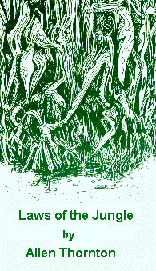

From The Radical Libertarian. For the book, write to Box 183, Vermilion, Ohio 44089 or e-mail me.
Preface
After the unrepentant drug dealer explained his philosophy, Sergeant Joe Friday replied, "If everyone thought the way you do, we'd have anarchy, the law of the jungle." Friday always has the last word. Since I am an anarchist, I might quibble with his definition of anarchy, but I have to thank him for pointing out that the jungle has its laws too. Maybe these laws are not as harsh as you suppose. Maybe the jungle laws are the only real laws there are.
I'm not going to try to turn you into an instant anarchist. I don't know you and I don't know how to change your mind. I know that most people simply can't hear the word "anarchy." Their minds refuse to entertain the idea. Those who are destined to become anarchists need no browbeating. Someone will say, "What if there were no government? What would happen then?" There are always people who open their minds and try to answer the question honestly. Their logic and imagination will turn them into anarchists and then they will wonder how anyone could have ever believed in government.
I have no desire to berate welfare cheats or excessive military spenders. What is the point in vilifying all politicians or bashing bureaucrats? After all, waste, fraud, and abuse can never be totally eliminated from human commerce, nor can vanity, ambition, and hatred be wiped out of human nature.
I don't propose to walk you logically from point A (government) to point B (anarchy). I can only show you a few thoughts of an anarchist, a few laws of the jungle. We are travelers in a dark, rainy night, but every so often a flash of lightening illuminates the sky and we can make out some of the features of our world. I hope that some of my words can serve you like those lightening flashes and reveal things to you that you hadn't suspected before.
You won't like some of the things I say. I don't like many of the things I say. By nature, I am parochial; by temperament, conservative. I don't even like the sort of person who says some of the things I say, but truth doesn't wait on my liking and disliking. In a speech at a treaty signing, Chief Seattle unconsciously invented a fine metaphor for progress:
"We are two distinct races with separate origins and separate destinies. To us the ashes of our ancestors are sacred and their final resting place is hallowed ground. You wonder far from the graves of you ancestors and seemingly without regret...But why should I mourn the untimely fate of my people? Tribe follows tribe and nation follows nation and regret is useless."
The present and future will always belong to those who are willing to forget the graves of their ancestors because nothing in this world is holy. Nothing is sacred, not my race, not my sex, not my work, not my religion, not the Earth itself or the life upon it, not my family, not knowledge, not the past, and certainly not the government. Only God is sacred, but God gives me no clear, unequivocal revelations. And so nothing is sacred to me, and my misgivings about anarchy are only prejudices and superstitions, cobwebs left by dead spiders.
1
The anarchist hates government. His anger is not directed against corrupt politicians, high taxes, tyrannous policies or any particular failing of any individual government. The anarchist hates government as the abolitionist hates slavery or the democrat hates monarchy. The anarchist regards government as an evil in itself.
2
Anarchy's not a system or a structure; anarchy means nothing more than the absence of government. And just what is this government? It's a man-made invention. It's not some natural phenomenon or a special creation of God. Government's an invention, just like the light bulb or the radio.
3
The state was invented for me, to make me happier, but a funny thing has happened: If I don't want this invention, people are outraged. No one calls me unpatriotic for refusing to buy a light bulb. If I don't choose to spend my money on a radio, no one says that I'm immoral. Why should anarchy upset everyone?
4
Every act of every government is based on violence. Political power, as Mao said, comes from the end of a gun. If the state wants you to stop doing something, it doesn't try to persuade you; it threatens to put you in jail if you keep doing it. If the state wants your money, it doesn't ask you for it politely. It doesn't try to earn it. The state extorts money from you with threats of prison.
Governments never open lemonade stands to finance themselves.
5
What do you think "govern" means? It doesn't mean "suggest" or "implore." It doesn't mean two people sitting down, talking it over, and compromising. "Govern" means "force" and "force" means "violence."
6
When you advocate any government action, you must first believe that violence is the best answer to the question at hand.
7
It takes more than brute force to create a government. I could arm myself from head to toe, rob, bully, and threaten everyone who crossed my path, but no one would call me president. They'd call me a bandit because they would consider my use of force illegitimate.
8
No matter how many soldiers, policemen, and agents work for the state, it could never maintain itself without the acquiescence of the general population. In 1917, Russia was as oppressive as the Soviet Union is today, but in a few months, that cruel an invincible monarchy disappeared. Only the approval of the people can create a government.
9
Anarchy is not a system or an alternate form of state. It is a stateless condition that society can attain. When the vast majority of the people become ungovernable, anarchy will exist. But this ungovernability must be nearly universal.
When the United States prohibited alcohol, no one took the law seriously. The law was unenforceable but the people still obeyed the government. America jailed many citizens for breaking a law that few accepted. But the people kept playing by the government's rules: They paid their taxes when they were told to and they went to jail when they were arrested. They were governable.
10
To understand ungovernability, imagine a cult with a dictatorial leader. He takes his followers' money, tells them how to behave and frequently uses corporal punishment to keep them in line. The cult leader has his own set of laws and his own police force. Such an organization resembles a theoretically good government deriving its "just power from the consent of governed."
Let's say that you, as a cult member, became disillusioned with the leader but were intimidated by the reprisals his guards might take against you. You could band together with others of the same opinion, kill the leader, and overpower his guards. Then you could reform the cult and make yourself the new leader. This course of action is analogous to a revolution.
But maybe you have a revelation of the cult as outsiders see it: a band of fools who believe ridiculous doctrines and are led by a maniac. You'd walk away in disgust. You'd still fear the guards, the cult's police force, but your attitude would have changed. What you had seen as legitimate force would now appear as criminal activity, and you would not be inhibited from striking back however you could. From the cult's point of view, you would have become an anarchist.
Now imagine that everyone in the cult shared your vision. All the members, even the guards simply go home and try to forget the whole stupid organization, leaving the leader to drum up a new set of idiots to follow him. That's what anarchy means: going home and minding your own business.
11
No one wants to picture himself as a victim of violence. Since all government action originates in violence, governments lie. States always prevaricate and coin new words to conceal their use of force. Taxes, laws, conscription, tariffs, regulations: A thousand words have been invented to distract your attention from the guns and prisons that uphold the government. If the state were honest and open about its use of violence, the victims might revolt or the victimizers repent.
12
In this century, communism, fascism, and democracy have convinced mobs of people that governmental violence can be used to achieve noble ends. But clean things don't come out of unclean things. Violence doesn't create virtue. Extorting money for charity enslaves the giver and turns the recipient into a thief. Politicians tell you that you need to be protected; but the more power you give the state, the more you are at its mercy. However much money you take in taxes and however many people you forcibly place in the army, you won't make the country any safer than it would have been if the people were free.
13
The weakness of fascism and communism consists in their turning citizens into slaves. Slaves have nothing to gain and nothing to lose.
The strength of democracy is that it encourages the common man to believe himself a ruler, that is, an oppressor of his neighbor.
14
Is the state worth what you pay for it? Put aside the debate on government's moral basis. Forget the indignity of being ruled and concentrate on the question of dollars and cents. The state takes from everyone. Then it hires some people, buys from some and gives to others. It performs a trillion transactions, some of them overlapping, some of them contradictory. It employs a healthy percentage of the population merely to protect and administer itself. You see the cost of simply having a government. You see the costs in confusion, duplication, and corruption that it creates; but you are supposed to believe that nearly everyone in the republic comes out a financial winner.
Isn't it obvious that a fairly large class of people would gain financially by the government's disappearance? Are you one of these people?
15
The economic system of the state is complicated, so complicated, in fact, that a suspicious mind might conclude that someone was trying to hide something. It is virtually impossible to calculate every cent you pay the government. Even if you could figure all the various taxes you pay in our economy, you could never add up all the taxes that are being passed on to you by others.
It is equally difficult to put a dollar value on each good and service you receive from the government. If you are a civil servant, are you gaining financially or losing by working for the state? From your point of view, what is the value of government subsidies for roads, for schools, for post offices, for parks, for anything else? If you work for an industry that depends on government contracts, how much are you gaining by the government's existence? How much is governmental charity or governmental foreign policy worth to you personally?
If you could discover how much you gain by government's existence and how much you pay for government, you could set the two figures side by side. Then you would know if you were a victim of the state or the state were victimizing others on your behalf.
16
When it comes to buying things, the state has no special power that you lack. Police cars, food for the poor, missiles, teacher's salaries, roads, low cost housing, nuclear submarines, customs inspectors, unemployment insurance, public parks, medical care, nerve gas, retirement insurance: Anything the state can buy, you can buy.
17
Ultimately, of course, there are two classes of people: taxpayers and tax receivers.
18
If you profit from the state's existence, I would no more expect you to become an anarchist than I would expect a maggot to become a vegetarian.
19
In the 1920's, critics first noted indignantly that Babe Ruth made more money than the president. I would never presume to say who was worth more: Herbert Hoover or the baseball player. But remember that the men who paid Ruth did so willingly while politicians extract their salaries from unwilling taxpayers with threats of prison. Can we ever know the worth of the things the government gives us? How can we assign a value to the state?
20
Before we can even ask how much the state is worth, we have to decide how we can assign a value to anything. Karl Marx had a simple and direct system for determining value: A thing is worth the labor used in making it. Furthermore, he claimed that the labor of each individual is equal to every other individual's labor. Value, for the Marxist, is calculated not in dollars and cents but in hours and minutes.
An older theory reckons the value of an item as the result of supply and demand. Both these theories treat objects as having value in the same way that they possess color or weight. Both declare that value is objective, and both assign arbitrary values to objects. Anarchists say that value is a judgment that takes place inside a human mind; value cannot adhere to an object like paint. Value cannot be found inside an item the way a toy is found inside a box of breakfast cereal.
21
All value is subjective. Each person must determine his own wealth; no one can determine it for him.
22
When I talk about value, I don't forget that wealth is more than money. Wealth is what you want. When you traded your money for oil stock, you increased your wealth. When you bought a swimming pool, you increased your wealth. When you lit your cigar with a hundred dollar bill to impress the girls in the casino, even then, you increased your wealth.
All your financial actions are directed from inside your mind, and they are all designed to get what you want. And we call what you want by the name "wealth."
23
There is no such thing as value or worth; there is only value to ( ) or worth to ( ). The radio at the garage sale might have a value of $5 to (you) and a value of $10 to (me). But the radio possesses no intrinsic value of its own.
24
Imagine that the apple you bought had some objective value, say 14 cents. When you bought it, either you cheated the grocer or he victimized you.
25
But an apple has no value in and of itself. It can only have value to ( ), subjective value. It was worth 20 cents to you and 10 cents to the grocer. You paid him 15 cents for it and so you both increased your wealth by 5 cents.
26
Perhaps the apple was worth 16 cents to you and only 5 cents to the grocer. Then your wealth was increased by 1 cent and the grocer's was increased by 10 cents. The grocer increased his wealth ten times more than you did; but you shouldn't feel cheated since you did increase your wealth.
27
Voluntary transactions increase the wealth of both parties.
28
Those who insist that objects, activities, people or creations have objective value are unhappy jealous souls who see all human commerce as a form of exploitation in which one party must always be cheated and degraded.
29
Perhaps you think that some voluntary transactions fail to benefit both parties. You might argue that the alcoholic does not increase his wealth when he buys a bottle of whiskey; but who are you to define his wealth? Maybe I think you are a fool to buy that car or pay so much for those shoes. Will you allow me to define what is wealth for you?
30
If wealth is not subjective, we need someone to tell us the worth of each object. We need a "wealth sayer." Such an officer could create a truly rational economy, rational in his mind. I suppose he would declare beans more valuable than steak because of the cholesterol. Copies of Hamlet would be valued higher than electric toothbrushes. Think how rich we would all become!
But why not go all the way: Call garbage gold and we'll all be millionaires.
31
People don't make every deal that will enhance their wealth; they look for the transaction that will give them the biggest profit. The alcoholic pays a high price for his whiskey, higher than mere money. In fact, the price is so high that you have to admit that he could never purchase a more valuable item with his money. After all, the whiskey is worth more than his health; what could his money buy that's worth more than that?
Tomorrow he may seek a cure and flush the whiskey down the toilet, and then you will say, "See, that purchase didn't enhance his wealth." But at the time he made the purchase, it did, and he was in a better position to predict his future values than anyone else. He was, in fact, the best predictor of his own estimates of wealth. The fact that he was wrong once doesn't change the thousand times he was right or lessen his ability to predict.
My time is not your time and my wealth is not yours. You eat sole amandine with an endive salad and an expensive wine. After you finish, the miser, with his day old bread and powdered milk, looks at you and says, "We are both full and I still have my money. That fool's purchase destroyed his wealth."
We can all argue about worth and value, but ultimately, wealth, like beauty, like value, like love, is in the eye of the beholder.
32
Give up your desire to dictate wealth and worthlessness to your neighbor. Your officiousness only fuels the power of the government to take more of your money and spend it on what some politician thinks you ought to have.
33
The envious soul with his well-honed sense of injured merit doesn't understand why his judgment of wealth and poverty are not the judgments of those around him. To him all human transactions involve exploitation. Finally, in impotent rage and frustration, he turns to the violence of the state to correct the dreadful conditions the foolish people have put themselves in.
The ironic truth about violence, either in or out of government, is that it usually destroys wealth. A burglar steals my TV and sells it for only $150. The price is ridiculous. I would have ransomed it for $250: $100 worth of wealth simply disappeared in the theft. The thief rarely values your property as highly as you do; the government never does.
34
Nonvoluntary exchanges usually produce a net loss of wealth.
35
The sum of all financial, nongovernmental activity is sometimes called the free market. In order to justify the state's intrusion into private transactions, economists have invented the idea of a market failure. A market failure is the inability of the free market to provide some desirable outcome.
36
What is a desirable outcome? People who talk about the state are in the habit of using abstractions, and from time to time, we have to look a little more closely at their words. Desirability, like values, is not an intrinsic property of a thing. An item may be green and soft and round, but it can't be desirable in and of itself. Desirability is a feeling toward something and feelings originate in human beings. Oysters may be desirable to you but undesirable to me. Nothing, then, is intrinsically desirable; it can only be desirable to ( ).
37
Some argue that the free market wouldn't provide a Pershing missile or that it wouldn't give everyone a clean, safe place to sleep. Of course, no one knows what a genuinely free market would or wouldn't do, but let's say these assumptions are true.
Since the free transactions of the population would not result in the creation of Pershing missiles, it follows that hardly anyone would consider the possession of the weapon to be a "desirable outcome." If the free market would not guarantee adequate sleeping quarters for everyone, we can assume that the population would not consider such a guarantee to be a desirable outcome. And if the people did regard the guarantee and the missile as desirable, their failure to buy them would indicate that they didn't regard them as desirable enough to forgo other desirable outcomes.
38
If the free market doesn't provide a desirable outcome, it must not be very desirable to very many people.
39
The free market provides nothing but desirable outcomes, and we can define a desirable outcome as anything that happens in a truly free market.
40
It is not a market failure if a company poisons your air; it is trespassing.
41
A car without seat belts is not a market failure; it is obviously a desirable item if someone wishes to purchase it. You might consider it desirable to (x) for x to have a seat belt in his car, but you state the matter wrongly.
Outcome A is (x has a seat belt in his car).
Outcome B is (x has no seat belt in his car).
Outcome A is desirable to (you).
Outcome B is desirable to (x).
The free market has a simple solution to your market failure: If you give x enough money, he will be glad to do whatever you want, even put seat belts in his car.
42
The free market may not do what you want it to do, but its failure to satisfy your requirements is not a market failure.
It's not a market failure if you can't find someone to give you saxophone lessons for less than $8 an hour.
43
Economists who believe in objective value see every transaction as a market failure, but economists have tried to construct market failures on the basis of subjective value too. Suppose that three families want to buy and share a swimming pool. The pool is worth $1500 to Family A, $1200 to Family B and $800 to Family C.
The cost of the pool is $3000. Since the pool is worth $3500 to the families, buying it would increase their wealth. Unfortunately, they cannot agree to pay $1000 apiece for the pool because it is not worth $1000 to Family C.
Is this a market failure? First of all, a mythical creature composed of the three families was created. Only this imaginary being valued the pool at over $3000; the pool was not worth $3000 to any individual. Second, the families could have bought the pool had they not demanded the principle of equal shares, "one family, one dollar." Third, the swimming pool is not the only good in the world. The very fact that the families experienced trouble in agreeing to the purchase makes it almost certain that more wealth could be created by some other purchase.
44
When it comes to buying things, the state has no special power that you lack. You can buy anything the State can buy for you and pay less too. You could join or form a corporation, a union, a syndicate or some other buying agent. Perhaps, though, you can't find enough people to join with you in your purchase. If that is the case, how do you think you could persuade half the electorate to vote your way?
45
Who ever heard of economists' discussing "state failures?" If the state fails to deliver on its claims, let's call it a state failure. Police claim to protect us from criminals. Social spending is supposed to end poverty. The armed forces say they protect us from hostile foreigners. The school system pretends to educate the entire population to a twelfth grade level. All these claims are absurdly impossible, but no one calls them state failures.
46
Why not call it a state failure if the free market can produce a good or service cheaper than the state. But first let government give up its monopolies and eschew tax funding of its enterprises. Then let government compete in the free market so that it can demonstrate its effectiveness rather than merely declaring it.
47
No one ever declares a state failure. Just the opposite. When government fails to achieve some avowed goal, it demands more money. When the government failed to control crime, it demanded more money; when it failed to end poverty, it demanded more money; when it failed to halt Soviet aggression, it demanded more money. The great growth of twentieth century governments has been fueled by their failures, not their successes.
If you want totalitarian powers, you must dwell on governmental failures, even if they are your own.
48
In government, nothing succeeds like failure.
49
The market can never compete with government for the heart of the people because the heart is desperately evil and wicked above all things. Let the free market produce a million millionaires from the ranks of the poor and ten million envious souls will rise up demanding government regulations to end the "social upheaval."
50
Against the state, nothing fails like success.
51
A thousand dollars is usually worth more to a pauper than a millionaire. Economists often use this fact to justify government's intervention in the market, claiming that the state can increase wealth by transferring money to those who value it more highly. You may be inclined to accept this argument since you believe that a homogeneous distribution of wealth is somehow morally desirable.
History, of course, is against you. The more government a people are subject to, the more likely their wealth will be concentrated in a few hands. But even if government could create a perfectly homogeneous distribution of wealth, a problem would still exist. Taking money from people against their will creates troubles.
Let me make myself clear. Let's say that you could restore the sight of an impoverished, blind child by taking a single penny from a joyless, bloated plutocrat. That act would be a theft. Call it taxation or redistribution or whatever you find agreeable, It is stealing, and eventually it will cause the same sort of problems as any other theft.
52
The American government has tried to provide each citizen with a certain minimum standard of living. Implementing this ideal has proved so difficult that some economists now favor a straightforward, equitable way of giving citizens an adequate amount of money, a system like the negative income tax.
For instance, the government might guarantee $12,000 per year for a family of four. It has been shown that such a system would be cheaper than the present tangle of programs if everyone continued to act as he does under the present system. The flaw is the fact that the negative income tax would alter behavior; the population's reaction would create the negative income tax catastrophe. To start with, everyone in a family of four that earned less than $12,000 a year would quit working. Millions would quit working; there's no point in working if you receive no pay. And consider the household whose members earn $13,000 per year. Do you expect them to keep laboring for the additional $1000? Do you think they'd be willing to pay taxes too?
Of course not. The state would have to subsidize the $13,000 family too. Perhaps it could be bribed to keep working for an extra $5000. It's obvious that the state would have to set up a schedule of payments to keep people at their jobs:
Family of four earns: Government pays:
$13,000 $5000
$14,000 $4500
$22,000 $500
$23,000 0
53
It's apparent that government would have to expend a great deal more money than originally anticipated; it is also clear that it would collect far less money in taxes. But even if such a system could be started, other consequences would occur in its operation:
1. Large numbers of people would quit their jobs. Some would simply remain idle. Some would enter highly speculative ventures (like treasure hunting or drug running). Many would divorce, marry, enter communes or do whatever was necessary to maximize their subsidies and stretch them as far as possible. Most, I suspect, would enter an underground economy of workers who feigned poverty.
2. Many people who continued to work would shun higher paying jobs in favor of the most congenial work. The profit motive for labor would he virtually eliminated.
3. Employers would cut salaries and depend on state subsidies to compensate their workers.
4. The pressure to receive government money would cause tax increases, which, in turn, would send more taxpayers into the ranks of tax receivers.
Any system of negative income taxation would fall apart in a year or two. The only way that such a scheme could survive would be if the payments were so low and the enforcement against employment so strict that few people would want the "free money."
53
It's apparent that government would have to expend a great deal more money than originally anticipated; it is also clear that it would collect far less money in taxes. But even if such a system could be started, other consequences would occur in its operation:
1. Large numbers of people would quit their jobs. Some would simply remain idle. Some would enter highly speculative ventures (like treasure hunting or drug running). Many would divorce, marry, enter communes or do whatever was necessary to maximize their subsidies and stretch them as far as possible. Most, I suspect, would enter an underground economy of workers who feigned poverty.
2. Many people who continued to work would shun higher paying jobs in favor of the most congenial work. The profit motive for labor would he virtually eliminated.
3. Employers would cut salaries and depend on state subsidies to compensate their workers.
4 The pressure to receive government money would cause tax increases, which, in turn, would send more taxpayers into the ranks of tax receivers.
Any system of negative income taxation would fall apart in a year or two. The only way that such a scheme could survive would be if the payments were so low and the enforcement against employment so strict that few people would want the "free money."
54
Any simple, nonstigmatizing program for income redistribution will fall apart. That's why all such schemes in the real world are capricious, degrading and complex.
55
United States laws and regulations reflect two strategies for averting the negative income tax catastrophe. First, they make sure that obtaining benefits is tedious, dehumanizing, and difficult. This practice has a curious side effect: The most incompetent citizens (those for whom the programs were created) often receive no benefits at all. The ironic fact about our present system is that receiving welfare requires the same skills as applying for a job.
Second, specific goods and services, rather than dollars, are given. Housing, medical insurance, and food vouchers are doled out in separate programs, thereby complicating the system further. Giving things rather than money also has an interesting side effect:
Welfare money tends to return to the wealthier citizens. For example, Medicaid may or may not extend the life spans of the poor, but it unquestionably increases the number of dollars going into the medical industry.
56
Brother Good and Brother Bad inherited equal portions of a large estate. Brother Bad spent thousands of dollars each year in the bizarre and wasteful practice of bathing in champagne. Brother Good spent the identical amount of money supporting unemployed families in his community. Brother Bad was widely condemned as a crazy wastrel. Brother Good was praised by the rich, loved by the poor and respected by all as a model citizen.
But when we follow the money spent by these two men, we find that Brother Bad's money created new jobs in the champagne industry. Even the money that seemed to be only additional profits to wine makers ultimately went to the creation and maintenance of jobs. Brother Good's money fed, clothed and housed no more people than Brother Bad's; and instead of creating jobs, Brother Good's money made it easier for its recipients to remain unemployed. Many or Brother Good's clients would have been delighted to secure a job in the champagne industry kept so lively by Brother Bad's excesses.
It is a strange fact that the simple selfish use of money will inevitably increase the wealth of society, but charity can often stunt the growth of wealth and create the very evil it seeks to cure.
57
Charity is not to be despised; there will always be a need for help. But the state, claiming to aid the poor with extorted money, has been notoriously incompetent at delivering people from poverty. Where charity should be a temporary help to those in trouble, politicians use tax money to create dependency and servitude. where the state maintains the hopeless citizen in his hopelessness, true charity forces hope upon him, the hope of self-sufficiency and pride.
America is now populated by armies of adults whose main source of income is tax money. These clients of the state have become grasping and resentful. Instead of desperately seeking ways out of the government's clutches, they form organizations proclaiming their own ineptitude and incompetence so they can loot the taxpayer more effectively. Their presence demoralizes their working neighbors and infuriates large portions of the taxpaying public.
Charity creates pride in the giver and gratitude in the receiver; but the government's monetary transfers create bitter contempt in the taxpayer and resentful envy in the tax recipient.
58
A cigar merchant who wants your dollars must compete for them in the marketplace. If the government took over the business, hired the merchants and kept anyone from competing against them, you could expect poorer service at higher prices.
But the state has taken over the charity business, and analogously, the productivity of charity recipients has decreased. Put simply, the state gives your money to people you wouldn't give it to.
You might give money to some of the state's clients. You might award some of them more than the state does. But as a class, charity recipients are not returning enough reward for your tax dollar.
59
Who is incompetent? Who needs your charity? The lame? The blind? The mentally handicap? Of course not. All they need is a system free enough to show their productivity. You might find one person in a hundred who cannot make enough money to keep himself alive in the American economy.
In past ages when physical strength was much more important than today, a far greater percentage of the population was productive; but today, government charity and restrictions on employers have turned many people into parasites. If the economy were truly free, employers could find ways to use the labor of the most incompetent people. who would be useless then? Who would need charity? One in a thousand? One in ten thousand?
60
Do you like unemployment? Give me the money and I'll buy it for you. Let me pay $200 a week to the unemployed and I'll give you a 12% unemployment rate. Let me pay $400 and I'll give you a 35% unemployment rate. You like poverty? Give me enough money and I can buy all the poverty you want.
But if you want people to have jobs, leave them alone. Don't make laws restricting their work or rewarding their idleness. If they can't find jobs, they'll invent them. Do you want people to be rich? Leave them alone. Every voluntary transaction increases the wealth of both parties. All those transactions that you and your government force upon them only impoverish them.
61
Man has his way as the other creatures have. I say that people love wealth, peace and knowledge. I say that the more men have freed themselves from government the more they have found these goods. Those who love government say the opposite. By implication, they assert that people seek poverty, violence and ignorance. To them, the government is the dam that holds back a reservoir of human folly.
Why should I argue with their conception of human nature? Let's assume that man is as depraved as the state's intellectuals paint him. Who are they and their state to change human nature? Even if they are correct about mankind, they are the ones who are out of step; they are the "inhuman" ones.
62
Will you and your government teach eagles to fly and tigers to hunt? Of course not. No one is so arrogant with nature. But you and your government want to tell me what to buy and how to live, and I am more complex than any eagle or tiger. Give me only the same respect you pay the badger and the blue jay, and leave me alone.
After all, anarchy means nothing more than human ecology.
63
Government, we are told, is all that stands between us and chaos. Without the state, criminals would run wild, do as they pleased and bring civilization to an end. Christians tell us that government is the price we pay for Adam's fall; without government's monopoly on the use of violence, man's sinful nature would destroy everything.
Before you consider this argument, ask yourself a few questions. Does government actually protect you and your property? If it does, is it the only possible organization that could protect you? Finally, is government the most effective and the cheapest method for providing protection?
64
When Genghis Khan and his sons were in power, it was said that a virgin with a bag of gold could walk across Asia unmolested. Today an armed man would be foolhardy to walk through the average American city at night. We spend a trillion dollars on government, and yet our governments fail to accomplish the purpose for which they were created. Government does not protect you or your property.
Do those in power even care about protecting you? Do they believe that protection is an important function of government? Look at the facts. In 1981 there were half a million police officers in the United States; they received about ten billion dollars in earnings. Since the cost of government was about one trillion dollars, we can judge the importance of law enforcement to government.
For every hundred dollars of government, you received one dollar of policeman. Let's make the government's priorities clearer. In that same year, the federal government spent eighty billion dollars for interest on the national debt; eight times the money spent on policemen was spent so politicians could continue to borrow money. Interest payments are money down a rat hole.
Were you to suggest that the government spend as much money on police salaries as it throws away in maintaining a debt, every responsible politician would brand you as a fascist who favors a police state.
65
If there were no government, the protection of life and property would be carried out by free market transactions. This idea may seem exotic to you, but remember that most protection in the United States is already in private hands. There are already more private guards than police officers, and consider other businesses involved in protecting the public against crime: lock manufacturers, insurance companies and dog trainers to name a few.
Ask a policeman to protect you. He'll tell you to lock your doors, bar your windows, install burglar alarms and avoid dangerous areas of town. In other words, he'll tell you to provide your own protection. Only after a crime is committed against you (and by inference the state) does the state take any interest in you.
66
It has been said that the policeman has an impossible job, and considering his varied duties and the restrictions on his conduct, the assessment is probably true. So isn't it foolish to set a man an impossible task and then convince yourself that he is performing it? How long would you keep paying an alchemist to transmute your lead pipes into golden ones?
67
The police aren't in the protection business; they're in the revenge business. Some people argue that the state's revenge provides a deterrent. Whom exactly does it deter? And what does it deter?
The state's vengeance certainly doesn't deter murderers and thieves; crime statistics prove that. Police power is, however, adequate to keep the average citizen obedient to the state. Try to set up a business without the proper licenses. Try to sell gasoline or cigarettes or liquor without paying the special taxes. Try to build a car without seat belts in it. Try to ignore the myriad of petty regulations and fees the government imposes on you, and you will quickly discover that the police power is adequate to keep you in line.
But ask your mayor or your councilmen about crime and they'll tell you about complex causalities, imponderables and impossibilities. You, the honest citizen, can always be coerced into whatever the government wants of you, but criminals are impossible to control.
Three or four cents of your total government dollar may go to the police, the courts and the prisons, but most laws have nothing whatsoever to do with protecting your life and property from criminals. Do the courts deter criminals or do they encourage crime by slow and irregular enforcement of laws? Do prisons deter and rehabilitate? Or do they teach crime? How much of that 3 or 4 cents is effectively spent on protecting you? I don't believe that more than ½ or 1% of your total tax dollar is used to protect your life and property. And so, I think it's fair to ask what government is about: the penny it spends to protect you or the other 99 cents it spends to rule you?
68
If the state did not spend 3 or 4 cents on police and prisons, it could hardly collect the other 96 or 97cents; it could hardly enforce all its edicts. From the economic and public relations point of view, policemen are an excellent investment for the politician.
69
Our habits of thought are so deeply ingrained that it is hard even to think about anarchy. I saw a man on TV who mentioned, in passing, that the United States has the world's best system of justice. "Well," I thought, "that might be a little chauvinistic; he should have said one of the world's best systems of justice. Then I said, "Wait, let me think about that."
America has the world's best criminal justice system only from the criminal's point of view. If the measure of a good system is the amount of crime that takes place in it and the amount of crime that goes unpunished, only then do we have the world's best system.
But if we say a system of justice is good in proportion to the safety of honest citizens and the likelihood that criminals will be punished, then America has the worst system of criminal justice in the world and maybe the worst in history.
I've been an anarchist for 15 years and I hardly questioned a man who said America has the world's best system of justice. I know it's hard to hear the word "anarchy," but try to steel yourself.
70
Those who identify anarchy with chaos make two assumptions. First, they think that criminals would act more aggressively if the state disappeared. Second, they believe that noncriminals would not change their behavior at all. Is it likely that both these assumptions are true?
Let's say the police department vanished tomorrow. I might not be the smartest person in the world, but I'd take some kind of action. Maybe I'd buy a gun. Maybe I'd get together with my neighbors and hire some sort of guard service. Maybe I'd start my own protection agency. But I would not depend on protection from an organization that no longer existed.
Would you?
71
Anarchy prohibits nothing but government. If enough people wanted the system of justice and police exactly as it exists today, they could buy it. But it's hard to imagine that a large percentage of the population would be satisfied with the meager protection they receive today. Private guards and insurance companies are enterprises that could fill the vacuum left by the disappearance of the state. But there could also be companies and individuals in recovery, revenge and other services.
Private companies dealing with crime already constitute a major industry; but this industry is hindered by the governmental monopoly on the use of violence. If people in anarchy regarded the protection of their lives and property as important, the free market would offer them choices totally unimaginable to us today.
72
Let's face the truth: In America today, crime pays. If the government did not hinder our natural ferocity in protecting our own property, criminals would soon learn a different lesson.
My own feeling is that counterviolence against crime would reduce violent crime by strangers to practically nothing in a month or two. Criminals would be forced into fraud as a means of acquiring property without producing.
73
You might argue that free choice and market competition in police forces and other protection companies would introduce inefficient complexity. Hundreds of companies would arise, some offering protection, some alarm systems, some revenge and others selling whatever the population was willing to buy. But if we consider the marketplace today, it is hardly simple. If you want a drink, for instance, you might go to a water fountain, a supermarket, a vending machine, a bar, a corner store or a thousand other places to satisfy your thirst. You might make a wrong choice, but you would never ask that your freedom of choice be limited.
Under the government, you have no freedom of choice, but curiously enough, you still have complexity. American police forces are decentralized and their jurisdictions are overlapping. As a citizen, you may be protected by (or subject to) local, county, state and federal law enforcers. Furthermore, you can be imprisoned by thousands of other government agents who enforce only certain laws like tax or drug regulations. You have the confusion in law enforcement now; all you lack is the freedom of choice.
74
The real difference between state controlled and privately controlled police forces is the matter of sovereignty: Who's the boss? Who has the final say? Under the present system, the federal government of the United States is the ultimate dictator concerning the use of force in America. In anarchy, each individual would employ whatever sort of force he chose.
Once you become your own state, your own sovereign, you can pass any kind of law you want to. But I think you should be careful about which laws you enforce. I'd advise you to cooperate with your neighbors. Who knows? If you become too overbearing, they may decide to pass a law against you.
75
Thieves and murderers could, of course, hire their own protection agencies and police. But is it likely that such organizations could operate openly?
Not even thieves condone theft. If the thief permitted stealing, how could he hang on to his stolen property?
76
There are some rules that virtually everyone agrees to.
77
Anarchy could create a state of constant warfare, if that's what the people want, and if that's what the people want, who are you to stand in their way? But if people desire to live in peace and security, they are forced to cooperate and compromise.
You could, for instance, make a law against smoking. If you enforced it only on your own property, it would have the force of an implicit contract for those entering your property and no one would object. But if you tried to enforce your law on your neighbor's property, you could run into trouble.
I think that most people would rather be secure in their properties and homes than grant you the right to search out smokers. They would probably find your antismoking law a threat to them. If you rushed around breaking into private residences, dousing smokers with fire hoses and hauling them off to your private prison, I believe that the population would regard you as a kidnapper and deal with you accordingly.
But I can never know for sure what form society would take in the absence of government. That's the whole point of anarchy. It's not my anarchy or your anarchy; it's simply anarchy.
78
We have given the state our proxies for the use of violence; and now the state's violence decides every issue. When we take our proxies back, we will decide most matters without resorting to force, but not all of them.
Let's say that you propose to control your neighbor's behavior. If you try to enforce your personal law on his property, you are likely to meet with resistance. And if your neighbor tells you how to act on your property, you're likely to resist him. Possibly a simple, single principle would evolve in anarchy, a single law that everyone could accept: "No trespassing."
79
Whatever 98 or 99% of the people wanted, even if it involved a trespass, could be enforced. For instance, a certain society might consider the uprooting of yams at a full moon to be a crime worthy of death. More heterogeneous societies would probably gravitate toward the simple notion of "No trespassing." Where majorities ignored this dictum, they would find themselves confronted by minorities willing to defend themselves with violence and uninhibited by superstitions like "the common good" or "pro bono publico."
"No trespassing" is easy to say, but its interpretation can be very complex. What constitutes a chemical, an auditory or an electromagnetic trespass? When does a defender use so much force that he has trespassed against a trespasser? Who owns and what belongs to the child, the criminal and the extremely incompetent?
The answer to questions like these would have to grow out of and evolve from the interactions of the population. Today the state simply dictates how force may be used.
80
If a thief stole my TV and there were no government, I'd like to go into everyone's house until I found it and then force information or a confession from the people who had it. On the other hand, if someone tried to force his way into my home to make sure I had paid for my TV, I'd want to shoot him as a trespasser.
From my point of view, then, it is unfortunate that such conduct would turn people against me. If I actually indulged myself in this high-handed behavior,
someone would probably shoot me. If I could convince a free market police force to use such methods on my behalf, it would never find another customer. Even if I could pay millions for a private army, the general population would not submit to me. The more money I spent, the more quickly my death would come. In anarchy my safety would ultimately lie in compromising and cooperating with my fellow human beings.
81
In anarchy, I would be forced to make the best deal I could for protection. I would not subscribe to a police force that intruded itself into my life unreasonably, nor would I hire one that pursued criminals with less diligence than it could. The vigor the police used against the man I accused is the same vigor they could use against me. The security granted the man I accused is the same security that I could expect. Free market police forces would have to be living compromises between the rights of potential victims and the rights of the accused.
82
My police force would have little power to apprehend the man who stole my TV; it would have to depend on the cooperation of society and other protection agencies (even the thief's). The criminal's protection force could not harbor him in the face of convincing evidence without running the risk of being declared outlaw itself; but it would certainly have to demand fair treatment for its client.
Since a great need for cooperation would exist, general procedures and limitations on punishment would evolve. It is in the interest of airplane companies to share information and cooperate on routing; record companies make standard size records to reach the largest audience. And it would be natural for private protection agencies to stay within certain generally agreed upon bounds of conduct in order to gain the cooperation that would keep them competitive.
Even those people who did not subscribe to any particular company would ultimately be protected by the need for standardization. I would not surrender a criminal or hire a company that surrendered a criminal unless I were convinced that he would be tried fairly and that his punishment would not be excessive. My refusal to cooperate with distasteful institutions is immediately and apparently in my self-interest. Not to resist actively would amount to cooperating with kidnappers who could attack me next.
83
A clever arguer who wished to assure you of anarchy's safety could prove that constitutional practices regarding search and seizure, cruel and unusual
punishment, etc., would evolve naturally in anarchy. Indeed, our present system would be the natural taking off point for anarchistic systems, just as English law was the natural starting point for democratic law in America. But no one can say what would happen in anarchy. Systems of justice could become totally chaotic. But the forms of justice would directly reflect the desires of the people, desires that could vary greatly according to time, place and the threat of crime.
There never could be a single fixed system of anarchistic justice any more than there could be a single kind of capitalistic store. The consumers of justice (both the potential victims and the potential criminals) would determine the shape of the system and its evolution.
Locke asserted that the individual surrendered his sovereignty to the state for his protection, but systems of protection and justice are not dependent on Locke's ironclad, permanent contract. I, for instance, never signed the Social Contract. If you ask the question "How can we protect ourselves without the government?" the only proper answer is "The possibilities are endless."
84
Without the state, you'd have to "take the law into your own hands." You might make your own law or hire a corporation to act for you. You might form your own association or join some established consensus. But, one way or the other, you would become the creator of your own law. And everyone says that it's wrong to take the law into your own hands.
But politicians make up laws every day and criminals make their own laws for themselves. If a man can gain enough money and influence, he too can make his own laws and impose them on you. Why don't these people understand that they shouldn't take the law into their own hands?
Your rulers explain this paradox simply. They make law in the name and interest of society. They admit that criminals do as they please, but they tell you that their actions are deplorable: deplorable but inevitable.
However, if you, an honest, productive citizen, dare to take the law into your own hands, the situation changes. Civilization immediately collapses and barbarism soon follows. Such warnings are nonsense. The only thing that keeps you from taking the law into your own hands is your own taboo. You believe that honest people shouldn't take the law into their own hands because if they did, there'd be anarchy.
85
Do you think that the government invented the law? Before the pharaoh declared stealing illegal, do you imagine that the Egyptians didn't mind theft? Do you think that the Chinese liked having murderers around until the emperor placed his edict against manslaughter? Of course not. Law comes from the interactions of the people. Society reaches an equilibrium.
Rulers claim that they give us law, but they lie. Law grew out of the common experience of humanity. The ruler's claimed contribution to mankind is nothing but mankind's own rules, an equilibrium, a balance between men, frozen from past times, often obsolete.
Petrified equilibrium.
Everyone looks out for himself, and order grows from this universal self-interest. Not my order, or your order, or the president's order, but a natural order.
An equilibrium.
86
Philosophers may tell you that the purpose of government is the protection of your life and property, but the real purpose of government is the aggrandizement of politicians by the spending of your money. The best way for a political leader to promote his personality is to start a war; unfortunately this method is an unmitigated disaster for you.
But it's your own fault. If you are asked to name good presidents, you're sure to include Lincoln and Roosevelt. The first presided over more American suffering than any two other presidents and the second ruled over a depression and a world war. If asked to name bad presidents, you would probably choose men like Grant, Harding and Eisenhower, presidents who held office over peaceful and prosperous times in our country. The message is clear: Good leaders fight wars. If the president can't find some foreigners to attack, he'll declare war on poverty or drugs or witchcraft or rock and roll or anything else that a majority of the voters can be persuaded to oppose.
87
There's a great clamor for peace in certain quarters; and the anarchist doesn't promise peace. What is this "peace" that so many people are demanding?
A dictator takes over a country. He doubles taxes, confiscates the press and the schools. He gives all the good jobs in the country to his cronies. The people grow poorer and some even starve. Finally, resistance to the dictator grows. Exiled leaders bring armies of patriots and freedom fighters into the land to oppose the dictator, but in a bloody war, the dictator manages to subdue his opposition. He then redoubles his tyranny by murdering anyone he suspects of disloyalty. He terrorizes the rest of the population with secret police and a corrupt judiciary. After a few years of such overwhelming and vicious government, no one dares to resist the dictator any more. The country can now he said to be at peace. Much of the world enjoys precisely this kind of peace.
War exists when some group outside the government is trying to gain control of it. Peace exists when no one dares to oppose the government.
Peace is nothing. Perhaps there will come a time when you and I can settle our differences without resorting to violence; but for now, let's he honest. Everything done by government is based on force, on prisons and guns. Twentieth century man lives under two systems: war and a form of slavery called peace.
88
Throughout history, many men have spent large amounts of time preparing for war. I'm certainly not going to say that all this work is useless. There have been leaders who raised huge armies to conquer alien lands, that is, to install their own governments over foreign peoples. If the people honestly believe that the conqueror will introduce a worse government than the one they have, they should intelligently resist the conquest.
Of course, everyone in the world is subject to some form of government. All the nations on the Earth are nothing more than conquered countries.
89
I make no distinction between defending myself from foreign soldiers and local thieves and murderers. Furthermore, an H-bomb fills me with no more dread than a blunt instrument. My protection in anarchy will depend upon the local situation. If I can defend myself and my property without paying anyone or joining any group, I will. If I have to pay two-thirds of my income and join with a hundred million others for security, I'll do that. But those hundred million others don't own me, nor do I own them. If we can enhance our safety by working together, fine. If not, we say good-bye.
90
The state does not share my attitude toward protection; it believes in "national defense." National defense is exactly what it claims to be: the protection of the nation. It is not your defense or my defense. Quite the opposite, you and I are called upon to lay down our lives for this holy entity, the nation.
What is the nation? In World War II, Japan was defeated. Its national defense was inadequate. The result? One group of politicians and civil servants was replaced by another group of politicians and civil servants. The second group differed from the first in being less bellicose toward the United States.
This sacred thing, the nation, which you and I are supposed to defend even with kamikaze attacks, turns out to be nothing more than the present regime, the current crop of politicians.
91
The government doesn't protect us; we and our money protect the government.
92
Not even our politicians believe that nations ought to be defended. They tell us that the Germans were better off without the Nazis and that Russia would be happier without the Soviets. What did national defense mean to a German Jew? What can it mean to a dissident Russian in a mental hospital?
93
Many of the world's nations have been threatened by conquest and have resorted to war for self-defense. Such is not the case with the United States. True, it has fought far-flung wars on distant continents; but it has made its own enemies through its foreign policy. In one case, Pearl Harbor, American military power was actually attacked. But we were far from neutral then, and in fact, the United States had committed every hostile act against the Axis powers short of declaring and waging war.
Wherever there is a conflict in the world, our political leaders find a way to spend American lives in it. Lately our rulers have favored treaty commitments as a means of sending us into conflict. But things were simpler 80 years ago. Remember the Maine? Remember the Lusitania? Our leaders sent Americans to fight and die every time a ship sank under mysterious circumstances.
94
Why should the United States have a foreign policy? I, for one, am perfectly capable of deciding what I think of any particular nation, whether I want to trade with it, support it with contributions, fight it or ignore it. I don't need a man to take my money and use it to promote his own foreign policy.
I might want to trade with Iran. You might want to trade with Ireland. I might want to bomb Cambodia. You might want to bomb the Philippines. The government has taken these decisions out of our hands with the most disastrous results. You and I can end up giving money to people we hate and waging wars against our friends. Foreign policy concentrates all the resources of America to oppose or support some foreign nation; this concentration of power (that does not exist in the minds or hearts of American citizens) creates the conflicts that lead to wars. We don't need a foreign policy; we don't need politicians to tell us which governments to hate or love.
But our government does have a foreign policy. Why shouldn't it have a vegetable policy too? If America (as a whole expressed through the state) prefers Israel to Syria, then let it prefer cauliflower to broccoli. Why not make sweet peas our "most favored vegetable"?
95
In a period of 80 years, the United States has participated in five major wars, but only the Spanish-American War was blatantly imperialistic. That is the same as saying that Americans have fought in four wars that brought no material benefit to their country. They fought for words, for slogans, for the high ideals of their leaders.
But what benefit did the imperialistic Spanish-American War give the average American? Some people prospered, a few died, a few were injured; but what of the average citizen? He received nothing, nothing but higher taxes and some interesting newspaper articles.
96
Is there anyone who thinks that Americans should have fought in World War I? The European powers could hardly explain why they were fighting, but that didn't stop our politicians from sending our youth to be slaughtered thousands of miles from their homes. For what? So bleeding kings, presiding over a doomed civilization like resentful zombies, could make one last vicious attack on each other.
America did have one effect on the war. With our help, Germany was so thoroughly defeated and humiliated that Hitler looked good to the German people a decade later.
97
Do we owe our freedom to our fighting men? To be drafted is to be enslaved. How can we owe our freedom to slaves? They may have fought bravely and died with courage, but they haven't given us any freedom. We would have been in their debt had they refused to fight foreigners and instead freed themselves from the American politicians who continue to enslave us.
98
Before World War II began, the American political establishment decided that German and Japanese totalitarian dictators were worse than Russian dictators. How they came to this decision is not exactly clear, but the power of the unconcerned American people was used to goad Japan into war. Had we followed a truly neutral policy like Switzerland's, no combatant would have hated us, but politicians are most alive when their constituents are dying. The temptation to enter the war was nearly impossible for Roosevelt to resist, particularly because many Americans were unemployed at the time and hence not paying taxes.
History tells us that World War II was a "good war" because Hitler was such a "bad man." But what of Stalin, our ally? He did more to ruin his country, was far more brutal and murdered more of his own citizens than Hitler. But Stalin (with the help of American draftees) won, so history tells us that this more monstrous monster than Hitler was a "tough leader."
99
Were our soldiers heroes? Many were, of course. There were Nazi heroes too, and Soviet heroes. All of them were heroes, in context.
But the context was insane. With government, the context is always insane.
100
America goes to war over slogans. World War I was billed as "the war to end all wars." Instead, it was the war that began all wars. World War II was sup- posed to "make the world safe for democracy." It made the world safe for Soviet imperialism.
101
After World War Ii, the United States undertook to protect the world from Soviet aggression. This goal was supported by American conservatives, many of whom had been isolationists before the war. They continued to oppose massive domestic spending, but they saw nothing inconsistent in subsidizing the whole free world's stand against the Soviets. The problem with their attitude is the fact that arguments against domestic giveaways are analogous to arguments against foreign giveaways.
1. Conservatives argue that throwing money at domestic problems does not make them go away.
1a. Throwing trillions of dollars at Soviet aggression has neither slowed it down nor ended it; in fact, it has become worse.
2. We hear that social spending creates dependency in many people who might otherwise contribute to society.
2a. Our nuclear umbrella and conventional forces have given the Europeans and Japanese the idea that Russia is an American problem. Russia is not really our problem at all; even if it dominated Europe and the Far East, we would go on pretty much as before. Our charity toward those nations has lulled them into the mistaken belief that they don't have to defend themselves. In my opinion, Europe and Japan ought to spend 30 to 40% of their gross national products on defense before American citizens help. Let them prove their sincerity.
3. Right-wingers argue that welfare often fails to reach the truly needy.
3a. The Soviets can take over any small, nonwhite country they choose with only a peep from America.
4. Conservatives point out that welfare creates a grasping, resentful attitude in its recipients.
4a. Our allies, instead of showing us gratitude, resentfully compare "superpowers" as though Soviet domination were in some way comparable to American aid.
American tax dollars (trillions of them) have failed to end poverty or slow Soviet aggression. Isn't this proof that government is incapable of doing certain things? Welfare recipients will tell you what a failure the system is. And listen to our allies; they say that we're hardly better than the Soviets. The message they both proclaim is clear: "Send us American taxpayers money, of course, and send us more of it. But let us spend it as if it were our own. And don't expect any thanks, either."
102
The powers of the Old World have waged wars, written treaties, aligned themselves as best they could and preserved a balanced system of governments for a millennium. The Soviets are no different from a hundred other regimes that have come and gone.
Along comes America, fabulously wealthy from years of allowing its citizens to produce whatever they could. America opposes Soviet aggression and builds incredibly effective weapons of war. Here are the consequences of our opposition: 1. Russia's close neighbors are lulled into a false sense of security. "why should we bother with the Soviets?" they ask. "The Soviets are America's business." 2. By constantly building new weapons of war and then refusing to use them, we have taught the Soviets that such weapons are possible. They then can set their people to work on creating the weapons; and if that fails, they can steal the designs from us. In five years, the Soviets can have any weapon we create.
Our opposition has led to a situation in which the Soviets have much more military power than their neighbors. Ironically, such a situation is by no means natural since their neighbors are infinitely more productive than the Soviets and quite capable of defending themselves.
If we had simply done nothing to oppose the Soviets in Europe and Asia, the Europeans and Asians would have been forced to provide their own defenses, regardless of cost. Had we not interfered, the Old World would have found its usual balance of power.
103
The United States went to war in Korea, but a change had come over American leaders. They prevented American troops from pursuing the war to its ultimate sources in China and Russia. Our practical monopoly on nuclear weapons was never used against our enemies.
Some people say that America gave unselfish aid to its friends while showing restraint toward its enemies. But think about the Korean War and the purpose of government. Here's GI Joe. His government claims that it exists merely to protect his life and property. Instead, it drafts him and sends him to fight, perhaps to die, protecting Korean lives and property.
Government is supposed to be like a doctor; it's supposed to keep its clients healthy. Let's say that Joe's doctor tells him that he needs a minor operation, and after the anesthetic has taken effect, the doctor cuts out Joe's heart and transplants it into another patient. The doctor is like our leaders who gave unselfish aid to their friends. But how unselfish can you be with someone else's life and property?
Or say that Joe had an operation for intestinal cancer and the doctor left some of the malignancy in him because the operation was long and difficult and the doctor had a golf date. Would Joe, still afflicted with the disease, praise the doctor for his restraint? And if communism is so evil that it must be fought with human life, wasn't it evil enough to be destroyed by nuclear weapons?
104
The refusal of American politicians to use nuclear weapons in Korea and Vietnam was the premeditated murder of American soldiers.
But our leaders are no longer content to serve the American people; they fancy themselves "leaders of the free world." Like all imperialists they have become cosmopolitan. They and a few of their friends understand how the world ought to be run, and they believe that a few American deaths is a small price to pay in order to realize their vision.
105
After nearly a century of officious meddling in the affairs of the Old World, Americans were shocked when the Russians established an armed camp in Cuba. Soviet Cuba symbolized a very distressing fact: For the first time in a hundred and fifty years, Americans faced an actual threat from a foreign state. Before then, our politicians' bellicosity had provoked wars where no real animosity needed to exist. Our leaders' reaction to the real and symbolic threat of Cuba was insane from the American citizens' point of view but, no doubt, very sensible to an imperialist: They promised the Soviets not to attack Cuba and quickly involved America in the Vietnam War.
106
We might as well have declared war on the moon for all the difference Vietnam made to American security; the only significance Vietnam had was for the Vietnamese (and apparently not much to them) and the American Empire.
107
Had Americans wished to help Vietnam, nothing would have stopped them. We are free to give our money to whomever we want and go wherever we want to fight; we don't need a government to take our money and draft us.
108
Had we fought against Cuba, we could not have afforded to lose; however, we could easily afford to lose a war in Vietnam. Victory or defeat in the Far East was immaterial to the defense of the American people.
Those who were called upon to fight quickly realized two distressing facts: The war made no difference to the safety of their homes and families, and American politicians had no intention of winning. Had our government chosen to win the war, it would have been over in a week, but they were more afraid of winning than losing, because winning the war might have involved them personally. And so, as has become our custom, a few thousand American lives were sacrificed to show the Soviets that our politicians weren't sissies.
The purpose of our foreign policy is not to protect American lives; it is not even to oppose communist aggression. The purpose of our foreign policy (as for practically all foreign policies in history) is to gratify the egos of our politicians. In most eras, the politicians seek wars to aggrandize themselves; our politicians seek only to maintain the status quo, a status quo in which half the world's population lives in virtual slavery.
109
America has put itself in a difficult position, and now we face three choices: 1. We can continue the present policy of trying to do no more than contain the Soviets. 2. We can become a totally imperialistic power and try to beat the vermin that rules most of the world back into the holes from which they emerged. 3. We can retire from the stage of Old World and Third World struggles.
Our present course is failing to discourage Soviet aggression while it is impoverishing the American people. I doubt that we will attempt the second course because the American people have been too forbearing to their enemies and too generous to their friends. That leaves the third alternative: withdrawal from our foreign commitments. I, as an American, would welcome it. We give European and other nations billion dollar weapon systems and standing armies of Americans that they haughtily debate about accepting. Perhaps it is time that they begged us for the privilege of buying our protection at a fair market price.
110
Withdrawing our support of foreign nations is similar to withdrawing our support of individual Americans who want tax money. Both classes have been so weakened by their dependence on government that they would have to turn elsewhere for help; but the mechanisms for helping have been preempted by the government. Time is the only answer to establishing natural relationships between people and nations. Maybe it could be done in five years, maybe twenty-five; but if the same thinkers who gave us the problems applied themselves to extricating the state with the least pain to everyone, the state could retire from these fruitless pursuits.
111
There was once a joke in this country that we had never lost a war or won a peace. Vietnam changed that.
But the Department of Defense still demands more and more money from us. Why should we give them any more money? So they can find a bigger war to lose?
112
There's no difference between war and any other activity: If the people want war, they can buy it without the government's help.
Some people assert that wars arise from man's natural instincts. But remember: People have to be threatened with prison before they'll join the military; and other people have to be threatened with prison before they will pay the taxes that fuel the conflict. Maybe war is not a part of human nature at all; maybe war is just a part of government's nature.
113
Americans have traditionally opposed wars and voted for the peace candidates until those peace candidates turned around and plunged them into wars. Then, we Americans look back and say, "It was a good thing we fought in that war.
What makes us change our minds?
After a war, the loser's propaganda is called propaganda and the winner's propaganda is called history. History teaches us that we were morally correct to oppose the Nazis. It is fortunate for our peace of mind that no Western photographers were able to chronicle Stalin's mass murders. We didn't invade Russia; we didn't get a chance to turn over all the rocks. But we know that the Soviets slaughtered more humans than the Nazis. Had we defeated the Soviets, we would, no doubt, have uncovered much more that was successfully hidden. Imagine that we had allied ourselves with Hitler and defeated Stalin. Right now we would be patting ourselves on the back for "saving Western civilization."
We think we favored the wars we were forced into because the truth would make us uncomfortable. We didn't want war, but the government manipulated us into war. It drafted us and took our money to fight the wars that we thought we were voting against. Stated bluntly, the truth casts us in the same slavish role as the Germans and the Russians, as mere cannon fodder for the ambitions of politicians.
That we are powerless over our own government is too terrible to believe, so we simply don't believe it.
114
Call tyranny freedom; call it liberty and the people will submit easily.
The Russians are slaves because they have only one political party that runs nearly everything in the country. Are we free because we can choose one of two?
115
Americans believe in "rogue" governments. When a government is too far left or too far right, it is a bad government. American democracy, of course, represents a middle course between the extremes.
Extreme right versus extreme left. Fascism versus communism. What are the differences? Both philosophies believe in total government control of a country's finances and economy. They both advocate an aggressive military. They both take a lively interest in their citizens' personal lives. And, in practice, they tend to solve their real or imagined problems with terror and mass murder. National socialism versus international socialism. The right is the left.
There is no right, no left. There is only more government or less government: anarchy to totalitarianism. Therefore, America does not occupy some central position between communism and fascism. American government is better than Nazi or Soviet government because it is closer to anarchy. However, it is not very close to anarchy. Our government substantially controls the country's finances and economy; it takes a lively interest in its citizens' private lives, and its military is quite aggressive.
If our superiority to Nazis and Soviets lies in our being closer to anarchy, shouldn't we become more anarchistic? This is the question that the belief in "extreme" or "rogue" governments conceals.
116
Americans believe in the "bad man" theory of history: There is nothing inherently wrong with the institution of government, but bad men corrupt individual states. If, Americans fancy, you could put enough "good men" into government, the world would live in peace and prosperity. They seem to think that leaders like Hitler wake up every morning and ask, "How can I screw up the world today?"
They forget that every bit of Hitler's life was dedicated to helping mankind. He was completely confident that he was of infinite benefit to humanity. None of our political villains consider themselves evil men. Just the opposite, they regard themselves as history's heroes.
117
Government is nothing without violence. Laws are merely whims backed up with guns, and taxes are simply the extortionist's demands for money. Isn't it natural, then, that governments are often led by immoral men?
118
Christians argue that the state is the price we pay for Adam's fall. If men were perfect, they say, we could have anarchy. Anarchists say the opposite. If all men were virtuous, the most perfect among them might be entrusted with political power, which is the right to use violence against one's fellow man. But since no one is completely virtuous, it is folly to entrust anyone with governmental power.
119
When a king or a dictator seizes money from his people, he uses naked force. He rarely feels the need to befuddle their minds. But democratic politicians have a more complicated problem: If their population sees the government as a money taker and a money waster, it has the power to change the government. Democratic states, therefore, use every tactic imaginable to convince the people that their tax burden is lighter than it actually is.
120
When it comes to buying things, the state has no special power that you lack. Once you understand this simple fact, you would naturally ask why you are subject to government. That's why democratic politicians are so careful to hide your taxes and why they are so eager to spread that tax money around as widely as is practical.
121
Politicians and their apologists are always proving to you that you have no idea of how to spend your own money. Your purchases would be frivolous; the state's are absolutely essential. Your purchases are selfish; the state's are noble and high-minded.
122
We are always hearing about the necessity for an informed electorate, especially when a public school system is campaigning for increased funding. But in one area, at least, the government spares no effort in preserving the voter's ignorance: taxes.
Taxes could be simple and understandable. For instance, a central taxing agency could send citizens monthly bills much as utility companies do and adjust the payments on a yearly basis. The agency could disburse the money to the various levels and branches of government. The taxpayer's bill would show him exactly how much he paid and precisely where his money was going. Everything would be totally in the open and the citizen would soon discover that government cost him about 40% of his income.
Under the present system, taxpayers have practically no sense of actually paying taxes. Taxes are withheld from paychecks and included in the price of purchases. In this respect, our tax system resembles the Soviet model. Russians don't pay taxes; the cost of government is built into every Russian transaction. The reason for this deception is perfectly clear: no taxes, no complaints.
123
The great growth of our government in the twentieth century has been accomplished in conjunction with foreign wars and increased redistribution. As a temporary evil in our fight against fascism (a highly centralized, militarily aggressive form of government), the state introduced withholding tax. Our fight against fascism quickly turned into our fight against communism (a highly centralized, militarily aggressive form of government), and withholding tax became permanent.
Without withholding taxes, it is doubtful whether the United States could maintain the highly centralized, militarily aggressive form of government that has been in power since World War I.
Withholding tax achieves two great goods for the government. First, it drafts all employers into an army of unpaid tax collectors. Second, withholding tax deceives the taxpayer. If he actually had to pay taxes from money that he received, he would be very angry with the government. He isn't angry now. Instead he grumbles at his employer for giving him so little "take-home pay."
124
If withholding tax is misleading, social security tax is downright sinister. The employer not only withholds a percentage of his workers' pay (currently about 7.5%), but he must match that amount from his own business.
A worker believes that his gross pay is $16,000. But his employer must match that $1200 which is withheld for social security, and so he sees the employee's gross pay as approximately $17,200. Since the employee never sees the additional $1200, he is totally ignorant of one of his biggest tax payments.
125
Social security taxes contribute to the distrust between employer and employee, but the state doesn't mind friction between its citizens. In fact, politicians thrive on conflict and ill will. Considering how useful the idea of hiding taxes is to the state, it is surprising that we have any awareness of taxes at all.
If the United States pursues this policy of tax obfuscation, we can expect to see the social security model enlarged and extended. Under some future system, the employer will simply pay all his workers' taxes. The employee will not be troubled by confusing withholding statements. The only time a wage earner will come into contact with the IRS will be when he is due a refund. Under such a system, the majority of people (like the Russians) can he persuaded that they pay no taxes at all.
126
Some taxes are so deeply hidden that no one but a specialist ever thinks about them. Import duties, for instance, are virtually invisible. These taxes achieve two useful purposes for the government. Duties raise money without antagonizing the population, and legislators can use them to grant a privileges to favored industries. In addition, the general population can he persuaded that such taxes patriotically save jobs.
A duty increases the cost of a product and that increase is paid either to the state or to the state favored industry. Such taxes may seem ideal from the government's point of view, but there is a problem. If a state employs import duties too aggressively, it risks retaliation from foreign governments. That retaliation can damage the nation's unprotected industries. Its most productive enterprises (the ones that need no protection) can lose important overseas markets.
The result of import duties is curious indeed. Without the state's interference, people tend to work at jobs where they are most productive. Let's say Americans can grow corn very inexpensively and Italians can make shoes at a very low cost. Americans sell corn to Italians and Italians sell shoes to Americans. But if American shoemakers are successful in keeping out Italian shoes, the Italians counter by keeping out American corn. Then we have Italians growing corn and Americans making shoes, the very jobs that they are least successful at performing. Duties, then, seem designed to destroy the wealth and productivity of the whole world.
127
Another deceptive method for gathering money is the excise tax or tax on a specific item. In America, a sizable amount of money is collected in the sale of gasoline, alcohol and cigarettes. Raising these taxes is very popular. Since the gasoline tax is used on highway upkeep, it is close to a user's fee and hence not very objectionable. The taxes on alcohol and tobacco have few critics since they are perceived as morally correct by the large segment of the population that feels the government ought to uplift the people.
The state can only raise excise taxes so far; after a certain point, bootleggers enter the market and the state's revenues begin to decline. Another problem with the "sin taxes" is their moral foundation. Is it right for government to benefit from customs it defines as repugnant? Should it depend financially (as it does) on continued drinking and smoking? These considerations persuaded the Prohibitionist party to oppose the taxing of alcohol. In general, though, the government follows a straightforward procedure with a morally questionable
practice:
1. Deplore it.
2. Prohibit it.
3. Monopolize it.
128
If sales taxes were levied on all items, they could distribute the tax burden homogeneously. If people paid taxes on every purchase from food to savings accounts, taxation would be proportionate to money use. In America only the states and cities impose sales taxes, but the federal government has trouble resisting any possible source of revenue.
As withholding tax turned every employer into a tax collector, the sales tax turns every clerk and salesperson into an unpaid government agent. The tax creates remarkably little ill will. The clerk/collector is as much a victim as the taxpayer, and the clerk/collector is in the position of serving the payer/customer, who is always free not to make any particular purchase. Furthermore, the tax is usually forgotten. Few people notice that they pay $1.79 for a $1.69 can of shaving cream. The only time a person is upset by this systematic government directed shortchanging is when he makes a large purchase. He then discovers that 6% of $1000 is $60, and he wonders whether he can save money by buying his TV in a different state. He doesn't reflect on the fact that 6% of five hundred $2 purchases also adds up to $60.
129
The federal government receives 8 or 9 % of its revenue from a corporation tax. This is a very neat trick since corporations don't exist. They are no more than useful legal fictions. Perhaps the government could tax unicorns in order to give us human beings a break.
Corporations don't exist, but people do, and people ultimately pay corporation taxes as a hidden cost in the goods and services they purchase. The real problem with corporation taxes is that they divert useful work into tax avoidance work. The tax system contains thousands of incentives for clever tax avoiders. At present the system has created a truly dismal state of affairs in American business: The corporation that can avoid its tax burden is as likely to succeed as the corporation that gives people a product they want.
130
In recent years, the various governments of the United States have received 35 to 45% of the gross national product in taxes. These figures mean that the average citizen pays 35 to 45% of his income to government; but if you are an average citizen, you have no sense of paying so much.
You jump into your car, drive to the market and buy a six-pack of beer. You may notice that you pay a sales tax on the beer, and maybe you remember that the gas in your car is taxed. But are you paying any other taxes? Remember that the car manufacturer had to pay a corporation tax and that sales taxes were involved in selling the car. The beer manufacturer passed his corporation taxes on to you along with the special excise tax on beer. Consider the fact that the beer and the car had to be delivered by truckers. Did they pay any taxes that they had to pass on to you? The trucker has to pay for fuel permits, base plates, axle taxes, ton mile taxes and special fuel taxes. There is also a special excise tax on their tires. You could hardly calculate all the taxes involved in the simplest transaction and they are all invisible.
In order to uncover all the hidden taxes you pay, you must consider that you are ultimately paying for human labor. Each person involved in producing and marketing your beer, each person involved in creating and maintaining your car has his own taxes, taxes which he must ultimately pass on to you. If you do business in America and have no special method for avoiding your taxes, you end up paying that 35 to 45%. You just don't feel it.
131
Since taxation is the forcible expropriation of money by the state, politicians would like to hide the size of the financial transfer and disguise its violent character. In America, nearly all taxes are collected by manufacturers, merchants and employers. The rules of the game are simple: If you want to do business in the United States, you become an unpaid tax collector.
There remains one form of tax that is apparent to the payer and that he is personally responsible for paying: the property tax. Like manufacturers, merchants and employers, the property owner is very cooperative with the government because he has something to lose. Those who have a little something that may be taken away from them are the easiest to control. They are unlikely to resist being drafted into government service, and besides, they are not actually paying taxes but only collecting them. Their role as unpaid tax collector sometimes gives them opportunities for and knowledge about tax avoidance unavailable to the average citizen.
Let's say that each person knew exactly how much he was paying in taxes and that he was personally responsible for giving the money to the government. Not all the agents and armies in the world could extract from the American people what they are paying now.
132
From time to time, a call goes up for tax reform or even tax reduction. When legislators respond to these demands, the general public is in trouble. Tax reduction or reform is nothing more than tax concealment:
The call for business to "carry its fair share of the tax burden" is typical of tax reform. Since business will simply pass the burden on as a hidden sales tax, the general population will still pay it.
Tax concealment inevitably leads to tax increases. It may take four or five years, but once the tax has been hidden, politicians will increase it to extract more money. Make no mistake. Tax reduction or reform means tax increase.
Can there be real tax reduction? Say, 20%? To reduce your total tax bill by 20%, the federal government would have to eliminate the Department of Defense. It must be fairly clear that no responsible politician would advocate such a drastic move or a comparable one in domestic spending. We are only talking about a modest 20% decrease, and it's obvious that it just won't happen.
133
It may seem surprising that government, with all its power and duplicity, cannot collect enough money to satisfy its clients' demands. But the demand for free money is infinite, and citizens do have the veto power when excessive taxation destroys their apathy. From time to time politicians discover that a national debt can satisfy some tax receiver demands without offending taxpayers. When debts come due, of course, both taxpayers and tax receivers are incensed, but the individual politician does not stay in office that long.
John Maynard Keynes devised a theory that legitimized governmental debt. He suggested that a strong central government could stimulate the economy out of a depression by borrowing and spending enough money. The state created employment would end the depression and generate enough tax revenue to pay back the borrowed money.
"Pay back the money." That's the hard part.
134
Politicians and intellectuals are fond of regrettable but temporary increases in state power that are necessary to achieve some desired end. For instance, Marx taught that the state would wither away under communism; the regrettable dictatorship was merely transitory. A giant military establishment was necessary for the United States to defeat fascism; the regrettable expense and curtailments in liberty were temporarily. Billions of dollars were thrown into the war on poverty; once poverty was defeated, we would all, presumably, be a lot richer. Hoover and Roosevelt had to borrow money to end the depression.
But we still have our giant military establishment; we still have poverty. And since the communist countries have the most tyrannous government, the revolution must still be going. When Hoover borrowed the first dollar to fight the depression, he probably thought that it would be paid back; but it has been repaid only by more borrowed money.
Isn't it fair to take Keynes at his word and say the depression is over only after the debt is paid back? Anything else would be a paper recovery, not an end to the depression but a deferment of it, a postponement. Since every American owes more than $15000 because of the national debt, can we say that the great depression is over?
Just as the communists are still fighting an invisible revolution against human nature, so the Americans are still in the middle of the depression, an economic downturn that was disguised in the 1940s but never ended.
135
It is an ill wind that blows no one some good, and a national debt is the illest wind of all. No one benefits. Taxpayers pay the interest and receive nothing. Borrowers have trouble finding money and the interest rate is higher. Investors invest in debt rather than wealth-producing, job-providing enterprises. Even those who hold the debt could make nearly as much money nearly as safely in other investments. Perhaps those in the business of moneylending are the winners. Some are, but they are all faced with a politically directed and hence unknowable demand.
To give a few people a small handout, the nation's productive capacity is crippled and its future is blackened. If you set out to ruin a country, the smartest way to do it would be to borrow money and use it to increase the citizens' standard of living. And yet politicians and their intellectual apologists will always find a reason why the government ought to borrow money. The reason is simple: Taxation is extortion. Rather than reveal this truth, politicians prefer to mortgage a future whose problems will belong to other politicians.
136
Throughout the nineteenth and early twentieth centuries, the work week steadily decreased until it hit 40 hours and it stuck there. In the same period of time more and more people have been employed. Add to these two facts the undeniable truth that the worker has increased his productivity fabulously, and a natural question arises: Why isn't every working person rich?
The answer to this riddle involves the redistribution of wealth. Contrary to the propaganda of the state, wealth is not redistributed from the rich to the poor:
It is redistributed from the worker to the nonworker. Let's pull back the curtain of governmental confusion. If you make $20,000 a year, you receive $12,000 worth of value from it and the state gives the other $8000 worth to someone else.
137
Who receives that $8000? A welfare mother? A rocket engineer? That question may seem very important to you but it really isn't. The important question is "Who decides who receives that $8000?''
If you were able to decide where your money went, there would be no problem. The trouble is that someone in government decides where that $8000 goes, and that person doesn't share your values.
If that government spender had the same value system as you, he'd give you back your $8000 and let you spend it.
138
In theory, governments protect men from each other, but in reality, the political leader sees himself as a great artist with the world as his canvas and human beings as his paints. As Bobby Kennedy put it, "Some people see the way things are and ask 'Why?' I dream of the way things could be and ask 'Why not?'
Hitler visualized a strong Germany leading the world into a glorious future. But the Jews, Gypsies and Jehovah's Witnesses didn't see the same picture. The homosexuals and incapacitated citizens spoiled his view. So he had them all put to death.
Stalin could have built the worker's paradise if he had not been thwarted by so many counterrevolutionaries. He found them among the old Bolsheviks,
in the army and with the prosperous peasants. He had to slaughter them by the tens of millions in order to realize his vision.
The political leader loves what you could become. It is only you he hates.
139
American visionaries cannot blame Jews or counter-revolutionaries. They blame "overpopulation." That single word sums up the unsolvable problem of all politicians: you. If the government could only get rid of all those troublesome people, things would go fine.
One of the first thinkers to suggest the problem of overpopulation was Malthus. Despite the fact that all his dire predictions were absolutely wrong, he is greatly admired and copied by modern thinkers. Other philosophers who predicted correctly have been forgotten because their accurate prophesies are not politically correct.
We live in a country where babies are regarded as a form of pollution. Many believe that fetuses, particularly poor, black fetuses, ought to be aborted before they can pollute the atmosphere or kill whales.
140
Overpopulation is not a matter of people per square mile but of the percentage of unproductive people, people who only take and give nothing back. The real question is "Who is productive and who is parasitical?"
Anyone who maintains himself without using force is productive.
A person who does not resort to violence supports his life by free transactions with his fellow man, and all free transactions increase the wealth of both parties. Anyone, therefore, who abjures the use of force is not simply surviving but making the world richer.
Productivity cannot be measured in dollars and cents; the infant, the panhandler and the preacher all give more than they take. Remember, none of them uses a gun to get your money.
But those who use force to maintain their lives destroy the wealth of society; they are the overpopulaters. Criminals use violence, of course, but there is a natural limit to the number of criminals that society will tolerate. Only the government can create enormous armies of people who maintain their lives on extorted tax money. Only the government can cause overpopulation.
141
Look. If I gave you the whole natural world to yourself, you would be in the worst poverty imaginable. You'd probably die in a few months. Wealth is created only in human transactions.
142
The great natural engine of wealth production is not enough for the politician. He argues that the state can create more wealth simply by redistributing money. Let's say that man A has $100,000 and man B has $1000. The state takes $1000 from A and gives it to B. A has lost 1% of his money and B has gained 100%. If A's subjective loss is less than B's subjective gain, A and B have more wealth than they did before the transfer.
There are several theoretical problems with this course of action, the least of which (from the politician's point of view) is that most people regard taking money from a person against his will as an immoral act. A second drawback is the assumption that $1000 is worth more to B than A. The only way to know what $1000 is worth to B is to put him in the marketplace and watch him. What will he trade for $1000? His car? His dog? Eighty hours of his time? A hundred and sixty hours? The fact that A possesses a hundred $1000 units is, in itself, a good argument that $1000 units are worth more to him than to B.
The third problem is the creation of the abstract entity "A and B." The politician says "A and B" has gained wealth; but "A and B" is not a human being. It cannot possess wealth at all. In truth A is poorer and B is richer. A is the victim of government and B its beneficiary. A is the taxpayer and B the tax receiver.
143
There are also practical problems with the idea of government redistribution of money. Wherever large governments exist, there is a concentration of money. Historically, the free market has distributed money more homogeneously than any governmental scheme.
In practice, government never simply takes from A and gives to B. Government takes money wherever there is the least resistance (and it is remarkable what strong resistance it encounters among the rich); then it spends the money on "social needs." Even when this process is directed toward enriching the poor, the money often ends up in the hands of contractors who build housing for the poor, doctors who treat the poor and other wealthy citizens who provide services for the poor. If you will only look at the world around you, you will see that the more government, the greater the concentration of wealth.
144
Government cannot take from A and give to B without encountering the negative income tax catastrophe. Government, therefore, claims to satisfy social needs; it sets itself up as the purchasing agent for society.
Society does not exist. You exist and I exist, but "society" is a ghostly abstraction frequently used to pry us loose from our money
145
Imagine a town of 10,000 people. Some of the people in the town want to build a $1,000,000 library. They try various schemes for funding the project, but no matter how they propose to distribute the cost, they cannot raise $1,000,000 if the citizens are permitted to contribute only as much as they want to.
It is obvious, then, that the library is not worth $1,000,000 to any individual or group of individuals in the town. We can't say exactly what "society" means; but by any definition, the library is not worth $1,000,000 to society.
The people who want the library persist, though. They manage to put the issue on the ballot in a straightforward form: Every citizen will be assessed $100. Strangely enough, the issue passes and the library is built. The library was not worth $1,000,000 to society, but it was worth $100 apiece to a majority of the voters.
Why did those who wanted the library turn to the voters? Precisely because they could not build it without using coercion, precisely because its purchase destroyed wealth.
146
Of course, the people who wanted the library could have been less honest. They might have proposed paying for it with a small increase in the property tax. If the increase were small enough, it would not have been too offensive to the property owners, and those who owned no property would have found no reason to vote against what they regarded as a free library.
The reality of government taxing and spending is rarely even this honest. Those who wanted the library would merely demand it from the town council; they wouldn't mention funding. The average voter would then ask the council why it was too cheap to provide such a necessary service. The library would go up, and then, out of nowhere, the town would discover a 'deficit." Perhaps no more than $100,000 could have been raised without extortion; but with the power of taxation, no amount is too large. As Al Capone observed, "You can get a lot farther with a smile and a gun than with just a smile."
147
Once the politicians take my money, I'm happy to argue about what they should buy with it. I might argue for planes or parks or job training programs. But nothing I say means that any of these purchases would actually increase my wealth; nothing I say after my money is gone indicates how I would have spent it if I had kept it.
I'm only trying to get a little of my own back, trying to make the best of a bad situation.
148
When any government makes a purchase, we assume that it does so because the transaction would not have taken place in the free market. After all, why should a government buy something for you that you would have bought for yourself?
But the only transactions that will never take place in the free market are wealth destroying transactions. Anytime, therefore, that the state spends money, we may presume that wealth is being destroyed.
149
Even though our form of government has so far preserved us from the worst abuses of state violence, its division of power has facilitated the looting of the taxpayer. Military waste is too well documented to require comment, but no one has ever gone to jail. No one (except the whistle blowers) has even been inconvenienced. No senator or representative has been voted out of or into office because of this issue. Military (and with it other public) spending waste is apparently beyond the reach of the voting public.
I heard a welfare recipient claim that society owed her the opportunity to raise her children without the inconvenience of having to go to work. Her audience applauded her maternal feelings as though motherhood conveyed the right to enslave.
We see the welfare mother's $10,000 as a hundredth of a cent from 100,000,000 people. We see the $50,000,000 jet plane as costing us only 50 cents apiece. If tax recipients had to answer to someone, even a monarch, money would not be spent so wastefully. A king, no doubt, would throw the welfare mother into jail and execute the joint chiefs of staff.
150
The voter has no control over public spending, and once he attains a government position, he has no incentive to be thrifty. In the course of performing their duties, civil servants and military personnel must spend money, but their spending is not held in check by owners' or stockholders' desires for profits.
A new method of doing business might save money, but government workers have no practical reason to adopt it. Any change is a threat to a well-established worker, and only the profit motive has been able to overcome this natural conservatism. Since public money is so cheap (from the tax spender's point of view), it is often expended for trivial reasons: to avoid boat rocking, to make work more comfortable or just to be agreeable to suppliers and clients.
Many Pentagon decision makers find employment after their service careers in the very companies they contract with. Such blatant conflicts of interest are by no means limited to the military. But perhaps the greatest pressure to spend money is the honest ambition of public employees. In the absence of a profit motive, status depends on the number of people who work under you and the size of your budget.
In the free market, success is measured by how much money you have; in government, success is measured by how much money you spend.
151
You must always keep in mind that you or a corporation you belong to can do and buy anything the government can. When it comes to buying things, the state has no special power that you lack: Anything the state can buy, you can buy.
152
From your point of view, the state makes three kinds of purchases. It buys things you approve of. It buys things you disapprove of. And it buys things to maintain its own existence. In all three activities, the state destroys wealth.
Consider a state project that you favor; you probably disagree with the details of its execution. If you are in perfect agreement with the purpose and the conduct of the program, the project is sure to cost more than it would in the free market. But let's take the extreme case. You like a government program; you like the way it's run. The program is run very inexpensively. You can still find another taxpayer who disagrees with your assessment. You are then the thief of his tax money.
153
The most maddening way the government destroys your wealth is by doing things that you oppose. Maybe you are actively against this particular rifle or that hot lunch program. You still have to pay your dollar to fund it. You haven't merely lost your dollar. You would have paid the government a dollar not to do it. The program, therefore, costs you two dollars.
154
The very existence of the state requires vast amounts of wealth. In general, elected officials do nothing but act as money spenders; they don't even pretend to produce wealth. The entire armed forces theoretically does nothing but uphold the government's monopoly on the use of force. Even the general population has been drafted into serving the state: Millions of hours are spent each year in filing tax returns, proving compliance with regulations, filling out forms and performing other unpaid work for the state.
Some civil servants are supposed to provide products and services, but others exist solely to maintain the state. For instance, anyone working for the Internal Revenue Service does nothing but collect money. Such an employee may he intelligent, may be hardworking; it may even be the case that he would make more money in private industry. But his actual work produces no wealth. Taking money from people to give to politicians is not a craft that is valued in the marketplace. That's why there aren't any free-lance tax collectors.
155
The politician's most important job is hiding the wealth destroying nature of government from the people. For this reason, a country's government will grow only after the country has increased its production of wealth. Let's say a technological advance allows a population to increase its production by 10%. Politicians immediately swoop in and convince the people that the government needs more money: maybe for defense, maybe to cure disease, maybe to provide for the poor, but it is absolutely essential that the government receive more money. Intelligent politicians are careful not to take the entire increase in wealth. Perhaps they take only 6%. Then the people, left with a 4% increase, pat each other on the back and say, "We never had it so good."
156
Governments were originally created from the excess wealth produced by the agricultural revolution. Typically, hunters and gatherers had no large or coercive governments; they rather decided mailers by consensus when they acted collectively. Only after the advent of farming do we see structures that we could call coercive governments.
By growing grain, farmers were able to produce more food than could be immediately eaten. Grain could also be stored and transferred. Both these changes from the past invited theft. Indeed, it is often asserted that farming communities first created governments to protect their excess wealth.
We cannot turn back time to see the creations of the first governments. Maybe a few people once consciously gave up their sovereignty to a king. Perhaps a few dozen men had a choice, but since that time, the rest of us have simply found ourselves born as subjects of one state or another.
157
A marauder takes all the wealth he can. If his victims die, he looks for new victims. Governments are careful to keep their subjects alive so that they can produce more. Government, seen this way, is intelligent marauding. The marauder is a mortal disease; the government is a parasite.
158
In Northern Europe, a few hundred years separated the tribal system from the feudal system. As the continent settled down to farming, the producers of wealth were forbidden to own weapons, and the armed upper classes extorted their livelihoods from those unarmed farmers. Similar patterns of change occurred in Mexico, China, Egypt, India, the Mediterranean world and South America. The farmer became a despised, subhuman drudge.
In other words, to be a wealth producer was to be a slave.
159
The original farmers could have used their excess wealth to buy protection; they could have maintained sovereignty over their own lives and property. Instead, they allowed a class of predators to evolve, men utterly contemptuous of the farmer and completely dependent on him. The history of the world is little more than a chronicle of those self-important pirates. When the actual producers of wealth tried to claim their lives and property, historians refer to "rebellions," "insurrections," and "anarchy."
Only after hundreds of years did a large democracy appear, a form of organization supposed to end the purely predatory nature of the state. In this sense, the American Revolution was the first successful battle in
a war that had been raging for millennia, a war waged by pharaoh, emperor and king against their own subjects. The Revolution had the same unachieved ideal as Marxism: to put political power into the hands of the wealth producers.
160
During the eighteenth century, a cumulative increase in the wealth of Europe led to the industrial revolution. As a result, the history of the nineteenth century is one of increasing populations, lengthening life spans and rising standards of living.
From the agricultural revolution to the 1800s, there had been no lasting fundamental progress. Here and there some men may have been less poor than others, less ignorant than others, less sickly than others, but universal servitude, occasional famine, frequent disease and pervasive hopelessness were always the norms. We twentieth century people have no conception of the past at all, and if we did, we would regard it as a living hell.
161
There's no mystery why communism, fascism and other forms of totalitarianism waited until the twentieth century. Governments destroy wealth. Wealth has to be generated before it can be destroyed, so an eighteenth century monarch (whatever claims he made to power) did not have the wealth to implement any real changes in the fabric of society. But the visionary politicians of the twentieth century can take half the gross national product without starving the people; such wealth gives them their resources in their battles against human nature.
Just as kings and nobles always despised the peasants on whom they relied, so our new leaders despise the workers and owners of the wealth generating society that fuels their schemes. The intellectual apologists for the new states lose no opportunity to attack the nineteenth century. The average American (educated in government owned or supported schools) now believes that those hundred years would have been an unmitigated disaster for humanity had not a benevolent government intervened to save the population from itself.
162
No guns were fired in the industrial revolution. People worked, invested or sold because they wanted to. Only in hindsight did the word "exploitation" creep into the argument. We twentieth century people cannot understand how people could tolerate the rigors of the nineteenth century. We never had to live through the eighteenth century.
163
The force that created the wealth of modern times has been called capitalism, but that name gives a false impression. The wealth producing force is human greed, the desire to gain more material benefits.
If I want something from you, I can try to pry it from you by violence. But what if all the violent roads are closed: I can't tax you or imprison you or draft you to get what I want, and I'm afraid to steal from you openly without the state's backing me up. If I have to eschew violence altogether, I realize that you must give me what I want freely. But you won't give up what I want unless I make it worth your while, unless you experience a net gain. Without violence, then, I must enrich you in order to enrich myself.
Simply shutting down the government use of violence, the easy violence, will cause individuals to find more and more wealth producing activities. And yet, a society can be relatively free from government and still fail to develop capitalism. The members of that society will not, however, fail to enrich themselves. They will increase each other's wealth in all their dealings. You and I may not understand their subjective estimates of wealth, but then, why should we?
164
Capitalism is the amassing and reinvesting of money in industry. Several governments in the early nineteenth century found that some of their citizens were producing relatively large amounts of wealth, but they had no traditional means for extracting that wealth from the producers. A tiny amount of economic anarchy arose, but like a weed growing through the pavement, it eventually destroyed the old system. Capitalism is not economic anarchy, nor is it the inevitable result of economic anarchy. But capitalism was a natural result of economic anarchy at that time.
It seems fairly logical to me that any population would embrace capitalism if it were freed from governmental restraints, but my opinion is a result of my culture. Other cultures might make very different uses of freedom. There is only one sure consequence of economic anarchy: No matter what economic system the society used before, economic anarchy will make the society subjectively wealthier. It is the economic anarchy that allows the man to enrich himself; it is not capitalism that enriches him.
Both right- and left-wing thinkers have confused capitalism with economic anarchy. They believe that wealth can be enhanced by manipulating the economy. Marx was so impressed by the power of capitalism that he proposed making it compulsory. Marxism is state capitalism: The government accumulates money and reinvests it in industry. The Soviet Union, then, is proof that capitalism cannot increase wealth by itself. Capitalism has been scientifically applied in Russia for 70 years and the people continue to fall behind the rest of the world in wealth. Forced capitalism is no more effective than forced feudalism; if you want to enrich people they must live in economic anarchy.
165
What we call modem capitalism began in eighteenth century England when manufacturers reinvested their profits in more efficient equipment and labor. Successful enterprises were able to lower their prices and continue growing. Over the next two centuries, traditional methods of business were replaced by more efficient ones, and the more efficient methods were replaced by still more efficient methods.
Capitalism rewards only the producers, not the parasites, and so it is no surprise that the beginnings of the industrial revolution often met with government opposition. Like the slave-owning southerner, the English aristocrat regarded the working person as inherently and manifestly inferior. The aristocrat sees the manufacturer as an "uncultured boor." The slaveholder prated about "wage slaves" in northern factories. The modern totalitarian intellectual lectures on the "dehumanizing aspects of capitalism." Deep
down they all understand that capitalism is a great power that destroys those who demand to consume wealth without enriching anyone else.
166
While the intellectuals of the nineteenth century were busily attempting to stop capitalism or improve upon it, it had hardly shown what wealth it could produce. The most important, if not the most logical, opponent of capitalism was Karl Marx, who encouraged the workers to rise up and "seize the means of production." If you happen to be a communist, why should you involve yourself in violence? Government hinders your communist economy only by draining off so much tax money; otherwise, the workers could quickly purchase the means of production. Anarchy opposes you not even that much.
If you want to be a communist, I'm sure that you can find someone to be your commissar. If you're a monarchist, you'll find a king. If you're a Nazi, you'll find your fuehrer. The world is full of men who long to be your pharaoh, your lama, your tsar, your emperor, your ayatollah, your chief or your caesar. Anarchy doesn't prohibit government; it only gives you your choice of government, if you want to be governed.
167
In Marx's theory, the state was supposed to wither away, but modern communists preside over the world's most oppressive governments. From the would-be dictator's point of view (however he feels about philosophy) communism has a very practical benefit: It is so out of touch with human behavior that a totalitarian regime is required to impose it on any population. And would-be dictators are always in the market for excuses to impose order.
Capitalism doesn't prohibit communal ownership or operation of enterprises, and, in fact, there were probably more Americans who experimented with communal living styles than there were Russian communists, believing Russian communists, that is. Marx claimed that communism would supersede capitalism because it was more productive materially. If this boast were true, communal experiments should have driven private ownership out of the free world. Needless to say, private ownership endures, and modern communists simper about "spiritual" values.
Marx instructs the workers to seize the means of production, but the American worker is in a position to buy them, if he shows only a little thrift. Many Jobs are capitalized at less than $100,000, an amount that could be borrowed and paid off in 20 or 30 years. But once the worker bought the means of production, it is unlikely that he would turn it over to the next worker who happened to take his job. No, he'd want to own it himself.
The communists demand a revolution in which the workers steal the means of production precisely because people don't value what they haven't worked for and earned. These undervalued means of production are easily transferred to the state and its dictator. No dictator would want to face a nation of workers who had acquired the means of production by their own labor. The whole system of communism is calculated to offend and weaken the very people it is supposed to aid. But this is no paradox. Under communism the state must fight a never ending war against human nature, and wars are irresistible to ambitious politicians.
168
Marx summed up human social organization with uncharacteristic brevity: "The history of all hitherto existing societies has been that of class warfare." The classes that Marx had in mind were the class that produced wealth and the class that did not. But Marx's definition of a wealth producer was extremely narrow; he excluded heirs, financiers, capitalists and others.
Marx's exclusive definition of wealth producers depends on his objective theory of value; but all value is subjective. Anyone who has received wealth without using force must have created more wealth for someone else. If the capitalist has made a million a year without using violence, he has to have given back more than a million. Does the infant receive thousands of dollars in goods and services? Then it follows that the infant must somehow create even more wealth in those who serve it.
Who then is the exploiter? The nonproducer? He is the one who depends on violence to obtain his wealth. He may be Marx's classic proletarian. He may work long hours at low wages in an unhealthy factory; but if his salary must be extorted through taxation, then he is the exploiter and his apparent production is unreal.
169
The communist complains that the capitalistic governments stand in the way of his revolution; but anarchy would remove the two great barriers to communism. In the first place, it would leave the money in the hands of the people, who could then decide what form of government they chose to support. In the second place, it would remove the government's monopoly on police and military force so that the state could no longer dictate property rights to an unarmed proletariat.
Given these conditions, do you think that America would spontaneously turn to communism? Of course not, no country in the world has chosen to be communistic. Nor has communism established itself in a capitalistic country, with the exception of those devastated areas in Eastern Europe that Roosevelt and Churchill simply abandoned to Soviet conquest.
Capitalism is a laboratory where every wealth increasing procedure is tried and the best is adopted. Communism can do nothing more than catch up with capitalism, and once it has caught up, the capitalists have gone further ahead. By the time the workers seize the means of production, they are already obsolete.
170
People turn to communism for the same reason they turn to any form of government: They do not believe that the free exchanges of people will give them what they want. They may only want bread for their families or they may hunger for power over other people's lives, but they feel incompetent to achieve their goals without governmental violence.
Government in general and communism in particular are the reactionary forces in the world. They tend to hold the population at its present standard of living while granting privilege and power to a few. Russia never changed. The great tide of capitalism that swept so many governmental parasites into the sewers was held back by the theory of communism, which is nothing more than feudalism with a new vocabulary.
Westerners degrade themselves when they declare their anticommunism; communism is unworthy of opposition. The overbred halfhearted socialists of Western Europe ought to thank God every day that Russia is under communism. If the peoples of that great country had a freer form of government with half the aggressiveness of the Soviets, Europeans would be speaking Russian as far west as Madrid.
171
The true anarchist is not committed to any particular economic system. He's confident that the principles of ownership that grow out of a truly free market will be the most advantageous for society, and probably for him personally. Anarchists realize that the concept of property changes from time to time and place to place. My ability to own anything depends not on my own strength but on society's acquiescence.
Consider the laborer. Throughout the Middle Ages, employers (feudal lords and master craftsmen) asserted ownership rights over the laborer himself. Through evolution, revolution and crime, all these rights of the employer were destroyed. At this point, in theory, the laborer became an entrepreneur, and he sought out the best market for his hours of work just as a capitalistic manufacturer seeks out the best market for his corrugated pipe. In practice, he began to claim ownership rights over his job. When a union member, for
instance, goes on strike and uses violence to keep out strike breakers, he is implicitly claiming to own his job and his employer's investment in it.
The governments of the world consistently opposed the liberation of the worker until he had liberated himself and gained the political upper hand. Those workers who freed themselves began to use the state to claim special rights and privileges. Social concepts change first; governments follow.
It doesn't seem right to me that the employer should own the employee or that the employee should own his job; and in practice, both systems have had to be upheld by government violence. But I'm willing to submit to whatever system develops naturally, be it communism, capitalism, theocratic socialism or syndicalism. Anarchists are confident that the ownership principles that evolve among free people will be the most subjectively enriching.
172
Anarchy is not some dusty little room to confine people; that's what any particular form of government is. Anarchy is the key to any kind of social organization that people are willing to pay for.
Anarchy is like jazz; it is the continuous creation of social forms in real time.
173
The democrat claims that the people already create their own governments in democracy, but what does "democracy" mean? After all, even the communists style themselves as democratic.
In a monarchy, one man rules. In an oligarchy, a few men rule. In democracy, the people rule. But who are the people and whom do they rule? If you say the people rule themselves, I have to ask whether I may rule myself. If I rule myself, then I am my own state and we have anarchy rather than democracy.
The important word in "people rule" is not "people" but "rule." In order for any ruling to take place, someone has to be a subject. Look at the Greeks, the barbarian tribes of Europe, and the Indian tribes and look at nineteenth century America. Each society had democratic elements and another common denominator: slaves and other people below the rank of citizens.
Democracy, then, is not essentially different from monarchy or oligarchy; it is merely the extension of oligarchy to give more people power over others. But the twentieth century claims to give us universal democracy. "The people rule themselves" also means "The people are their own slaves." This fiction of universal democracy, of everyone sharing political power, is like a cannibal eating his own foot.
174
Whatever you call the system, political power and tax money end up in the hands of the few, and those few are always the same sort of people whether they are French monarchists, Russian communists or American democrats. There was a time when America was much closer to anarchy; but government has gained more and more money and power over the years. Our politicians have become very powerful by promising to give people things they haven't earned while assuring other people that they aren't being robbed of their honestly acquired wealth.
Talk of Democrats, Republicans, conservatives and liberals is nonsense. The particular party that holds power does little or nothing to alter the character or size of the state. We have politicians who call themselves liberals. When Lyndon Johnson proposed policies that increased the size and spending of the federal government, these liberals were happy to work with him. But today, these same people say that government is not doing enough for the poor, the sick, the aged. They act as though the programs they worked for were plots to keep the poor docile and quiet. These liberals must have been hypocrites when they supported those programs. At best, they are dishonest not to admit they were wrong in the past about what government could achieve.
We have people we call conservatives in power, but they conserve nothing but Roosevelt's New Deal and Johnson's Great Society, which they worked so hard against. If there were an ounce of honesty in these modem conservatives they would call for the dismemberment of the agencies whose births they opposed. But they're all afraid to lose elections so no one says "Welfare is making things worse" or "Social Security is nothing but a pyramid scheme." Instead, they are content to preside over the socialism they claim to hate.
175
The two-party system is a shell game with two shells and no pea under either of them. The Democrats are symbolized by a donkey and the Republicans are symbolized by an elephant. But the two parties are a jackal and a vulture fighting over a corpse.
176
By itself, democracy does nothing to increase the percentage of productive citizens. The people do what the kings and lords have always done: They try to use the power of government to make slaves of their fellow human beings. They keep voting themselves special privileges and transfers of money until the situation is hopelessly complex and literally no one actually benefits. More people depend on government violence for their paychecks than in any other time in history, but they have no sense of any special privilege.
In a monarchy, the parasite and the producer inhabit different worlds, but the spirit of democracy doesn't permit the tax receiver a lavish life-style. Those who benefit from the government are usually no better off than their neighbors.
The tax receiver doesn't know that he is victimizing the rest of society. Under democracy, billions of dollars are spent on hiring hardworking people at fair wages to do jobs that no one really wants done. The only people who truly benefit are the few crooks who are bold enough to loot the public treasury.
177
"Government of the people, by the people and for the people." "Power to the people." "The rights of the people." The people is the Wizard of Oz: outside, all noise and fireworks and glory; but inside, a little fat, bald man who wants you under his thumb.
178
You say you believe in democracy. Good. I want to ask you a certain question: "If you had the power, how would you change the government?"
Think about it. Would you give more money to the poor? Maybe you'd like to reduce the size of government? Would you take a more aggressive stand against the Soviets? Maybe you'd be more conciliatory. Would you reform the bureaucracies? Would you crack down on the drug traffic? Would you try to wipe out organized crime?
If you really believed in democracy, you would say, "The people have already decided how to run the government through their elected representatives, and I would be wrong to impose my will on them."
But you didn't think that. You say you believe in democracy, but in your mind, you're already a dictator.
179
Democracy can't give you anything. If you consider the cost of having a government, the cost of things you don't want, the cost of corruption, the cost of governmental monopolies and all the other costs of government, it is clear that you receive less than 50 cents worth of product for every $1.00 the state takes from you. If you could simply force everyone to pay for the programs you want, and if you bought them in the free market, your government would certainly cost less than half the present one.
This calculation means that if 50% of the people want a certain program, they could buy if for less money without the state than they would pay for it through the government's system of buying it for them. Perhaps you argue that you couldn't persuade 50% of the people to pay for the program you want. If that's the case, you don't want democracy; you want to be king.
180
You might argue that the people, left to their own devices, would not buy national defense or social spending or some other programs that you favor. But what are you arguing against?
If democracy provides Program A and the people would not buy Program A in anarchy, then we have a failure of democracy to supply the people what they really want. Your democracy has spent the people's money in contravention of their will. You must be on the side of either Program A or the people's will.
Let's be honest. Any government, even a democracy, is designed to circumvent the people's will, not implement it. Arguments against anarchy, arguments for a coercive state, are often arguments against the people; they are ultimately arguments against democracy.
181
Is anarchy more radical than democracy? Look at the Declaration of Independence:
"We hold these truths to be self-evident, that all men are created equal, that they are endowed by their creator with certain unalienable rights, that among these are life, liberty and the pursuit of happiness—that to secure these rights, governments are instituted among men, deriving their just powers from the consent of the governed, that whenever any form of government becomes destructive of these ends, it is the right of the people to alter or abolish it, and to institute new government..."
The anarchist has nothing more radical to say than this. He merely points out that all forms of government are destructive of the ends for which they are created and that the people have the right to abolish them without instituting any new governments.
182
Some Americans have a religious reverence for the Constitution. They speak of it in hushed tones and treat its provisions as though they were amendments to the Commandments that Jehovah hadn't considered. The Constitution is totally different in spirit from the Declaration of Independence. The Declaration was written to encourage the overthrow of a government; the Constitution was written to set one up. Where one declares liberty, the other declares law. Where the Declaration pronounces the rights of man inalienable, the Constitution gives slaveholding states three-fifths of a vote for every soul held in bondage.
"We the people of the United States..."
The masses of the United States had exactly as much power in creating their Constitution as the masses in Russia had in creating theirs, that is to say, none.
"...in order to form a more perfect union"
Since the Articles of Confederation had created a "perfect" union, the only justification for a new Constitution was the creation of a "more perfect" one. Had it proved necessary for twentieth century politicians to write another constitution in order to extend their power, we would by now he living in a "most perfect" union.
Grammatical imperfections hide lies. That's why political grammar is so Byzantine. In reality, the purpose of the Constitution was to centralize political power. The only relation the document has to human liberty is establishing means to control it.
183
The new constitution incensed many Americans. They particularly demanded that the document spell out individual freedoms, and so the Bill of Rights was grudgingly added.
"Right" is a vague word whose meaning has changed over the years. If I have a right to life, can I expect a battalion of angels to protect me? No. My right to life means something like "It is wrong to kill me" Rights, then, turn out to be wrongs, or moral restrictions.
Eighteenth century thinkers regarded rights as limitations on state powers. Freedom of the press did not demand that anyone who wanted to publish something be supplied with printing presses and ink. It did not grant publishers special protection against crime. To the eighteenth century mind, freedom of the press meant that it would be wrong for the government to arrest publishers for distributing works that certain politicians didn't like.
The problem with the Bill of Rights is fairly obvious: If individual rights mean government wrongs, then some party outside the government ought to judge the government's actions. Such a party would be sovereign over the government, and hence a government itself, so that no one could judge it and it could commit the same abuses as the government. Any system of entrusting the government to judge and correct its own abuses is the same as appointing the accused criminal as his own judge and jury: Don't expect many convictions. Don't expect to see your rights protected strenuously.
184
Most of the provisions in the Bill of Rights are concerned with the rights of accused people; and the government has been very conscientious in making sure that an accused criminal is treated in strict accordance with the Constitution. Of course, criminals present no threat to the state. Just the opposite: If all the criminals were to reform tomorrow, many people might ask why we needed the state at all. The provisions of the Bill of Rights that are supposed to protect honest citizens are not interpreted with so much vigor.
We are supposed to have freedom of the press. But the press is a threat to the state, both to individual politicians and to particular theories of rule. That's why it needed special protection from the government. Imagine a country where everyone would be free to type up and circulate whatever he wanted. But the government of the country declared every printing press and every other form of copying machine to be the "people's property" and regulated them "in the public interest." Such a country could not be said to have freedom of expression.
The situation in the United States is exactly parallel. The citizen is free to print whatever he thinks on paper, but the government has declared the radio and television airways to be the "people's property," and it regulates them "in the public interest."
185
The Bill of Rights guarantees the right to free religious expression. Such words are nonsense. Give me a law and I can find someone to object to it on religious grounds. Nor do religious zealots hesitate to break any law they choose in order to make a point. And if that isn't bad enough, political idealists find religious reasons for their causes so that every political question becomes a "crusade." Prohibitionists, abolitionists and abortionists can all find religious reasons to break existing law.
When I tell a Christian that I'm an anarchist, he looks horrified and starts searching through Paul's letter to the Romans. But then I ask whether he'd break the law to help the persecuted Jews in Germany. Of course he would. Would he have returned a runaway slave to his master as the law dictated? Of course he wouldn't.
He will obey every law that doesn't violate God's law, and his conscience will inform him of God's idea of just laws, unless God tells him in person. He's more of an anarchist than I am, but when I say the word "anarchy," he recoils. Anyone who puts his own conscience above the state is an anarchist.
True religious freedom is impossible for the state to grant. Religious freedom means anarchy.
186
Another noncriminal right supposedly protected by the Constitution is the freedom of speech, but as the Supreme Court commented, that freedom does not protect people who yell "fire" in a crowded theater. The defendant whose freedom of speech was limited had not disturbed any moviegoers. He had publicly advised Americans to resist the draft for World War I.
Any pronouncement sufficiently inconvenient to the state will be equated with yelling "fire" in a public theater, and I suppose that the politically minded man will believe the analogy. "After all," he will ask, "what would happen if the people actually did resist the draft? There'd be anarchy."
If we had freedom of speech, we could talk about breaking laws, but such conversations are outlawed as conspiracies. With certain conspiracy laws, it is a more serious crime for two ten-year-olds to talk about stealing a candy bar than it is for a man to rob a bank.
In America, then, we have complete freedom of speech, just as long as we don't get caught at it.
187
"A well-regulated militia being necessary to the security of a free state, the right of the people to keep and bear arms shall not be infringed."
The Latinate construction of the Second Amendment is vague enough for gun controllers to argue about, but it is fairly clear what the Revolutionary War veterans understood by the right to bear arms. They had just defeated the world's greatest military power and as long as they remained armed, no government, British or American, could tyrannize them again. The right to bear arms, from their point of view, was the right to overthrow governments. The weapons of the twentieth century include jet fighters, automatic
weapons, nerve gas and nuclear bombs. If the government has them, the people have a right to own them too. Anything less is tyranny.
188
The American's proudest boast is "This is a free country," as though the government protected his liberty. Nothing could be further from the truth. Federal, state and local governments have passed more laws restricting human action—that is, liberty— than any other civilization. Think of a law, however petty, meddlesome or tyrannous, and you will find that it has been passed by some government body in America. But some Americans are natural lawbreakers; they were born disobedient. It is they we should thank for our liberties. We don't owe our remaining freedoms to idealistic lawyers or Supreme Court justices. We owe them to bigots, rum runners and pimps who refuse to be governed.
189
Some historians praise the Constitution for protecting the individual from government abuses of power. The secret, they say, is a system of separating powers that creates checks and balances. With any government, though, there must be only one sovereign. The Confederacy found no safety in the separation of power or checks and balances. Theory aside, one group's will decides each question.
Abraham Lincoln never let states' rights stand in his way. Andrew Jackson was not impressed by checks and balances. When the Supreme Court ruled his removal of Cherokees unconstitutional, he remarked, "John Marshall has made his opinion; now let him enforce it."
If the separation of powers is really desirable, why not take it a step further. We have a two party system. Why not have a two government system? Everyone can vote for the government of his choice with his taxes. Let the two parties compete for your tax dollars by running parallel governments.
If we can have a third party from time to time, why not a third independent government? Since governments are so good, why not have a thousand to choose from?
Why not have two hundred million?
190
After all is said and done, American citizens have as much liberty as any people in the world. Critics of America say that we're chaotic, and our defenders claim that we have reached a fine balance between individual rights and society's needs.
Individual rights versus society's needs. One problem with balancing the demands is that rights don't exist. You can't touch a right or taste it or smell it. To say that I have a right is to say that someone is wrong to take or keep something from me. A right, then, is an inside-out moral. But there are so many versions of morality that you will never find two people who totally agree on the subject. How can you expect two hundred million people to submit to the same morality?
Individual rights versus society's needs. The second problem is that society doesn't exist. You exist, and I exist, but "we" doesn't exist. "We" is not an animal, not a person; it is merely a temporary fiction. And society is "we" times a hundred million. Entities that don't exist have no needs. So then, with or without the state, there are no rights, no needs; there are only personal desires and individual power.
191
You don't want to hear this talk of might versus might. You don't want to hear about a jungle; you're civilized. You want to believe that you have certain rights and that the state protects those rights. But anarchists say that you surrendered your might, which is your money and your obedience, to the state, and the state is only a mask for other men. You are now in a position of bondage to strangers over whom you have only the slightest control.
Look. There were more Jews than Nazis. The Jews were braver than the Nazis. The Jews were smarter than the Nazis. But the Jews weren't anarchists; they were civilized. They were good citizens.
192
Like all previous government, the United States has failed to protect the people's inalienable rights, however these are defined. Criminals steal, kill, assault and trespass in a hundred other ways; and our governments do not deter them at all.
Since these private abuses of force are the state's justification for existence, you might think its dismal record in crime fighting would make it humble. Just the opposite. As the population created more and more wealth in the industrial revolution, the state expanded into new areas and encountered new failures. Today our government is in the business of defining and satisfying human needs and shaping the structures of society.
193
"Need" and "want" are both transitive verbs; "I need" and "I want" are not grammatically complete sentences. "I need (X)" and "I want (X)" are grammatically complete, but "I need (X)" is not logically complete. You may "need a car to go 60 miles an hour," but you can't just "need a car." "Need (X)" by itself means nothing more than "want (X)." Logically, the idea is "need (X) in order to (A)."
A politician who wants to take your money to satisfy other people's needs never says those other people "want" your money; no, they "need" your money. But what is a need? Do you need air to live? You could live without air for a while. Maybe you "need" that last breath just before you die. Maybe that breath was already too late. Do you need a continuous supply of air to live? No, an intermittent supply is sufficient.
Let's be honest. "I need" means "I want." "You need" means "I want you to have." "They need" can mean two things: "they want" or "I want them to have."
194
As long as politicians use the word "need" to extort money for their constituents, they are acting in a time-honored tradition. But "the people need" can also mean "the people ought to have." For instance, the
people need food; that's clear. But the study of nutrition has progressed during this century. We know that deficiencies of certain vitamins are linked to diseases, and scientists suspect that some types of foods may be linked to other diseases. There are people in America who would invade your kitchen. Though they possess little hard evidence of disease causation in the population (and no understanding of disease causation in you), these people would impose on you the diet that you need, a politically correct diet. "The people need food" can give politicians the power to tell farmers what to grow, factories what to produce and stores what to sell. Ultimately, your "need for food" can be used to force-feed you what the politicians want you to eat.
195
The government wants to fill our need for medical care. We have already been through two stages of state controlled medicine: the licensing of doctors (thereby granting them a state-enforced monopoly) and the Medicaid-Medicare system (a limited form of socialized medicine). The political arguments for totally socializing medicine depend heavily on past failures, that is to say, the failures of the other two state controlled systems to deliver effective, affordable medical care.
There is an old saying that he who pays the piper calls the tune, and that principle applies to state controlled medicine. If there were medical anarchy, for instance, the health costs of cigarette smoking would be borne by the smoker, his insurer, his doctor or other parties who entered into voluntary agreements with the smoker. But under the present system, those health costs are often paid by unwilling taxpayers. Shouldn't the taxpayer have control over your smoking?
Shouldn't the taxpayer have control over your drinking? Your diet? Your exercise? The natural officiousness of mankind is given an economic blank check in socialized medicine. Armed with a few well-chosen studies and some post facto arguments, the determined meddler can justify the law's intrusion into anything you do or fail to do.
196
You don't need to read science fiction novels to find intrusion into your life. You were forced to attend a state approved school for 12 years. You are subject to conscription, temporary slavery. You may not choose what drugs to take. Certain books are forbidden to you. You may not choose certain sexual practices. If you tried to kill yourself, you'd be breaking the law.
The state claims to own you.
197
Recently, our government has addressed a collection of separate issues under the general heading of ecological concerns. There are people in our society who insist that the natural world has rights of its own, rights that our government ought to protect. If the United States protects badgers and wolverines no better than subway passengers, we can expect a whole series of new extinctions.
The argument that natural creatures have rights distorts the obvious truth: Ecological issues are debates about who will own and use property. After all, if whales and gorillas have a right to life, so does the AIDS virus.
198
Many ecological concerns involve simple trespasses; technology has increased the number of ways you can hurt me or destroy my property. But public property, oceans, lakes, rivers and air, for instance, are at the highest risk for damage. Undefended and apparently unowned property is a temptation. Many entrepreneurs have simply homesteaded the waterways and air as their private dumps. Ecological law, in this respect, reasserts the state's ownership and control of these various properties.
Many conservation laws are more elitist. Like William the Conqueror, who closed the English forests to the hungry peasant hunters, the conservationist says, "I've got mine, and I want to pass laws to keep you poor people from spoiling the view." This attitude is exemplified in recent complaints that too many Americans are visiting the National Park system. Many conservationists seem to believe that millions of acres should be reserved for them and a few of their close friends.
If the best use of a public park is as a public park, market forces will keep it a public park. The anarchist does not believe in the state ownership of any property. Neither the rivers, nor the ocean, nor even the air itself can be left unowned: Someone is sure to claim them for his own. It is always a matter of what use of property will generate the greatest wealth, and only anarchy assures the maximization of wealth. It is quite possible that a public park may generate the greatest wealth as a public park. Look at yourself. You're afraid it will be turned into a giant motel. Maybe you'd donate a few dollars to keep it public.
199
Another field the state has entered belatedly is the opposition to prejudice. Its stance is a bit paradoxical, since the history of all previous governments involves the upholding of sexism, racism, chauvinism and privilege. It was, of course, capitalism that first cracked the wall of prejudice, and capitalism is the only hope for real equality. Capitalism rewards productivity, nothing else.
Lets say that Andorran Americans receive 75 cents for every dollar the average American earns. Furthermore, this difference in pay is a result of racism; the Andorrans are roughly equivalent to everyone else as workers. If I pay Andorrans 75 cents for every $1.00 others receive, I can cut my labor costs by 25%. As a rational capitalist, I'll hire all the Andorrans I can find, undercut my competitors and get rich.
When my Andorran operated business succeeds, other entrepreneurs will get on the bandwagon, but as more people use the Andorran strategy to get rich, the price of Andorran labor will rise. Still, at 90% of the average salary, money can still be made, and Andorrans will still be in special demand. In the end, of course, Andorrans will receive what they are worth, and the prejudice regarding Andorrans and jobs will have vanished.
But you still want the state to combat your favorite -ism. You say that the process has not worked with the group you have in mind. Wonderful: You can be the one to get rich.
200
Ecological problems are just the misuse or underuse of property; prejudice is nothing more than the misevaluation of a person or a situation. But the government-minded man always looks for crimes. He forms a group, identifies the villains and passes laws. But somehow, the air doesn't become any cleaner; the victims of prejudice are not better off. Every action has its reaction and the law turns the villains into victims of the state; new martyrs are created.
Take away the government option (the violence option, the easy answer) and people will begin to see the possibilities of making riches. Every evil conceals an opportunity: Thieves make lock manufacturers rich.
201
Politically active Christians, whether liberal or conservative, believe that the United States government has mystical and special connection to God. Many of these Christians are frankly more interested in shaping politics than perfecting their souls. But the Bible doesn't mention democracy. Jehovah's preference for a form of government was entirely different from the Americans' (Samuel 8:10–18):
"And Samuel told all the words of the Lord unto the people that asked of him a king. And he said, "This will be the manner of the king that shall reign over
you: He will take your sons and appoint them for himself, for his chariots and to be his horsemen; and some shall run before his chariots. And he will appoint him captains over thousands and captains over fifties; and he will set them to ear his ground, and to reap his harvest, and to make his instruments of war, and instruments of his chariots. And he will take your daughters to be confectionaries, and to be cooks, and to be bakers. And he will take your fields, and your vineyards, and your olive yards, even the best of them, and give them to his servants. And he will take a tenth of your seed and your vineyards, and give to his officers, and to his servants. And he will take your menservants, and your maidservants, and your goodliest young men, and your asses, and put them to his work. He will take a tenth of your sheep: and ye shall be his servants. And ye shall cry out in that day because of your king which ye shall have chosen you; and the Lord will not hear you in that day."
If our leaders took only a tenth of our money, we'd count ourselves the luckiest nation on Earth. But the point is that Jehovah preferred a tribal system with temporary war leaders in time of trouble. The Old Testament is a commentary on the Hebrews' rejection of God. They rejected Jehovah when they worshipped foreign gods and idols. This passage highlights a parallel evil: the rejection of Jehovah by dependence on kings and government for civil protection.
202
In Romans 13:1–4, Paul states his position on civil government: "let every soul be subject unto the higher powers. For there is no power but of God: The powers that be are ordained of God. Whosoever therefore resisteth the power, resisteth the ordinance of God: And they that resist shall receive to themselves damnation. For rulers are not a terror to good works, but to the evil. Wilt thou then not be afraid of the power? Do that which is good, and thou shalt have praise of the same: For he is a minister of God to thee for good. But if thou do that which is evil, be afraid; for he beareth not the sword in vain: For he is the minister of God, a revenger to execute wrath upon him that doeth evil."
If I were picky, I might ask what evil Jesus performed that necessitated that "minister of God" Pilate to "execute wrath upon him" by crucifixion. Or I could note that since Nero was "not a terror to good works" the hoards of Christians he murdered must have been very evil people. But the essence of this passage is submission to the state. Paul tells his followers not to revolt, just as Jesus said, "Render unto Caesar those things that are Caesar's."
For good or evil, American Christians have never followed these counsels. Our very government was founded in an act of rebellion against a Christian state infinitely more benevolent thin Rome. And I doubt that many black Americans agree with Paul's parallel remarks on slavery ('Corinthians 7:2–2l): "let every man abideth in the same calling wherein he was called. Art thou called being a servant? Care not for it."
203
In essence, the New Testament tells us to be "in the world but not of it,', and entry into political and social causes makes us of the world. when we read the sayings in the New Testament, we must remember the context: The first century Jew thought of Caesar as the twentieth century Jew thinks of Hitler. To him, Rome was nothing but a predator. Jesus' assessment of government can be seen in pronouncements such as Matthew 5:25–26: "Agree with thine adversary quickly, whiles thou art in the way with him; lest at any time the adversary deliver thee to the judge, and the judge deliver thee to the officer, and thou be cast into prison. Verily I say unto thee, thou shalt by no means come out thence, till thou hast paid the uttermost farthing."
Jesus portrayed the state as an evil to be borne patiently. This attitude is the very antithesis of modern democratic ideals, which encourage participation. Actively shaping the government is regarded as a heroic act. But the Christian ought to remember the words of Christ in John 18:36: "Jesus answered, my kingdom is not of this world: if my kingdom were of this world, then would my servants fight, that I should not be delivered to the Jews: But now is my kingdom not from hence."
204
We are told that we need a government to counter the violence of men or their potential violence. From the Christian point of view, the moral basis of government is "Two wrongs make a right."
205
"Ye have heard that it hath been said, An eye for an eye, a tooth for a tooth: But I say unto you, That ye resist not evil: but whosoever shall smite thee on thy right cheek, turn to him the other also. And if any man sue thee at law, and take away thy coat, let him have thy cloak also. And whosoever shall compel thee to go a mile, go with him twain" (Matthew 5:38–41).
Christ utterly repudiates violence in this world, but his followers have not been so dogmatic. Government serves a very useful psychological purpose for the Christian: He can regard himself as a humble sufferer under an evil world system, but if someone steals his car, he calls the police.
If a crime boss agrees to make peace with a rival and then hires thugs to kill him secretly, we say that the crime boss is responsible for the murder. If a
Christian turns the other cheek, forgives his attacker, and then swears out a complaint against him with the authorities, are we so befuddled that we think the Christian acted nonviolently?
If a man steals a Christian's TV, that Christian ought to give the thief his videocassette recorder, too. That's how I read Jesus' words, but the existence of government encourages the Christian to participate in vengeance with a clear conscience.
206
"The young man saith unto him, all these things have I kept from my youth up: what lack I yet? Jesus said unto him, If thou wilt be perfect, go and sell that thou hast and give to the poor, and thou shalt have treasure in heaven: and come and follow me" (Matthew 19:20–21).
Many of today's Christians think that we ought to have a good government, by which they mean a government that acts as a good man acts. A good man ought to eschew violence; he ought to be charitable. However, government is violent and all its charity must first be extorted from its citizens.
Some Christians believe that the state ought to feed the hungry, clothe the naked and care for the sick. But look, here's a man making minimum wage in a fast food joint. The state takes his money, then runs it through a system that gives it to social workers, contractors, form fillers, form manufacturers and a host of other people who make a lot more money than he does. Finally the state delivers a pittance to the poor, most of whom the man finds undeserving. He hates the word "poverty." He hates welfare. And the Christian browbeats him for his callousness and greed. On the other side, the poor aren't satisfied either; they want more of the hamburger maker's money and fewer restrictions and more dignity.
All this dissatisfaction had its origin in the violence the Christian used against the population to obtain wealth for charity. Would not everyone have been better off if the Christian had not turned to the government's violence but instead acted as Christ advised the young man? He should have sold his own things and given his own money directly to the poor.
207
Most people believe that violence is counterproductive, if not absolutely evil, and the institution of government provides a psychological benefit for these people. The citizen can abhor and condemn the use of force while receiving its alleged benefits. With his vote, he can bully and plunder his peaceful neighbors without the condemnation of society or threat of retaliation.
Government has become modern man's new religion. He gives it his money and his obedience, and in return, the state provides him the comforting fiction
that he is secure in his person and possessions. He believes the government has created order. He feels that security has been accomplished without the use of violence, that he need never fight or take the responsibility for fighting. As long as he never challenges the absolute necessity for having a state, his mind is at ease.
But if the word "anarchy" should creep into his thinking, it would shatter his image of himself as a secure and moral man.
208
Visions of Utopia. Plato had them. Nightmares. Specters. Thomas More was subject to them. They come into the world through a man's mind. Hitler tried to create Utopia, the earthly paradise; Lenin labored for it. A billion living people have been sacrificed to this strange god, Utopia.
What is it? A giant named Procrustes had a bed, and when a stranger wanted to spend the night, the giant allowed him to sleep in it. But if the traveler were shorter than the bed, the giant stretched him on the rack; and if he were longer than the bed, the giant cut off his feet. Utopia is that bed.
Utopia is the individual creation of a single mind, but the world is filled with billions of minds. All the governments of the world are utopian because they all aim to be the best possible government. The closer they come to perfect government, the more the man is made to fit the mold, the less the man is what he is.
Then what is anarchy? Anarchy is anti-Utopia.
209
Belief in government is the superstition that some magical power endows certain men with the right to use violence against others.
The fear of anarchy is the secret conviction that violence is the best way for a person to get what he wants.
210
Some people say, "Anarchy's interesting but it won't work." Of course it won't work. Anarchy's not a machine; anarchy's not a system. Anarchy is merely society without the illusion of government; whatever comes of it, comes of it. And many events would happen in the absence of a state that you would find repugnant.
Government, on the other hand, sets itself up as a system or a machine. You put in your obedience and your tax money, and it is supposed to crank out security, justice and an end to poverty. No earthly government, however rich, however obedient its subjects, no earthly government has ever produced these desired results. Government's interesting, but it doesn't work.
211
Anarchy means that you are sovereign over yourself. Can you actually avoid being your own sovereign?
Let me ask that question another way: Does government really exist?
212
The end of modern books usually shows you how government can solve the problem at hand and how you can activate the political powers. It would seem to follow, then, that I would tell you why you should dismantle the government and how to go about it.
Overthrowing the government would be useless. No system (not democracy, not communism, not pharaohism) can exist unless a vast majority of the people acquiesce to it. Until 95% or more of the population become anarchists, governments will continue to thrive. When the critical number of anarchists is reached, governments will start blinking out like stars in the morning.
Voting is useless. Since the general population accepts the idea of government, no candidate who favors even a 10 or 20% reduction in state power or spending can possibly win an election. Even voting against specific laws or taxes is playing the state's game. As government becomes increasingly totalitarian, freedom from tax or regulation has the effect of a special privilege, an unfair advantage.
Discussion is useless. The benefits of government are psychological, not material, and so it is virtually impossible for the average man to hear the word "anarchy." Why discuss anarchy with him? Here's how he thinks:
"If taxes go down, I'll pay $1000 less, but my neighbor who makes twice as much as I do will pay $3000 less. Therefore, tax reduction is a scheme of the rich."
Refusing to pay taxes will put you into jail. Boycotting the free products of the state will impoverish you. My advice is to mind your own business and forget about anarchy. It may be true that everyone would be much richer without the state, but wealth will always go to the man who can work best wherever he finds himself.
213
Anarchy will, of course, come, if not today, then tomorrow; if not tomorrow, then ten thousand years from now. The history of the world is the steady increase of wealth. The land and resources ultimately wind up in the hands of those who can produce the most wealth from them. It follows, logically, that the wealth destroying state will eventually fade into history.
But for now, the government is a new toy that the people cannot stop playing with. It seems to them so simple, so easy, so logical to solve their problems with extorted money and threats of violence concealed behind the holiness of the state. But even now, in the last two hundred years, we see the beginnings of the attack on government itself.
One day, the very idea of government will seem like an insane artifact of the past: witch burning, crusading, black slavery, prohibition. Then the people will look back and wonder at the nature of man. Like Macbeth they will say, "Can such things be, and overcome us like a summer's cloud, without our special wonder?"